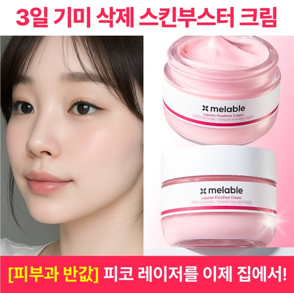
피부과 반값 / 피코 레이저를 이제 집에서! / 기미 삭제 / 3일 / 스킨부스터 크림
원문·관련 설명 ↗GLOWDERM / 소재 운영
멜라크림필수 6요소(도포소거·비포먼저·2주 날짜카드·고소 보증·전문가 해설·레이저 비교) 기본 탑재
클렌저화장 들뜸 전후 · 롤링과 세안 장면을 촬영
일정하루 2편(1시나리오×A·B, 10/22) · 담당 배정과 납기는 미확정
베러디션 B/A 강한 레퍼런스 분석 후 사용자 확정. 멜라크림 신규 소재는 아래 6개를 기본으로 넣고, 빼는 건 이유를 적는다.
| # | 요소 | 어떻게 | 근거 레퍼런스 | 우리 자산 |
|---|---|---|---|---|
| 1 | 도포 소거 | 면봉·거즈·니트릴장갑으로 바른 뒤 닦아내 기미가 옅어진 길을 보여줌. 3~5초 단위 반복 가능 | 1046258 · 729573 | 이름 일치 파일 11건(mp4 8·png 3) · 폴더명 일치 7곳 안 영상·이미지 64건 · 대표: 내부제작/영상/시나리오7_신규생성_20261012/01_최종승인본, AI생성/영상/기미크림_컷제작/7인_비포도포_농도일치_480p_20260909, AI생성/이미지/기미크림_컷제작/맨얼굴_도포와개선_3컷 (드랍박스 글로우덤광고, 이름만 집계) |
| 2 | 비포 상태 먼저 | 0~1초에 기미 접사부터, 깨끗한 결과는 1.6초 이후 | 1046258(0초) · 729573(3초) | - |
| 3 | 날짜 카드 | “2주만에 변화”(Day1→Day14). 수치는 2주·트라넥삼산 5%만 | 24건 중 0건이라 차별 요소 | - |
| 4 | “효과 없으면 고소하세요” | 도발형 보증 멘트 | 고소하세요 보증 사례 | - |
| 5 | 약사·전문가·개발자 설명 | 토킹헤드가 전후와 시연을 해설 | 660633(마스크 약사 + 검버섯 도포→닦기 컷 삽입) · 전문가 설명형 · 개발자 탄생 이야기형 | - |
| 6 | 레이저 비교 | 레이저 n회/비용/재발 vs 크림 | 729573(레이저 대안 몸통) · 시나리오_7·18 · 비교·대안형 | - |
근거: B/A 강도 랭킹 페이지 · 10/21 ACIS 후보 24건. 도포→소거 반복이 비중을 만들고, before를 0~1초에 먼저, 제품·할인 패널 고정, 증상 호명+결과 수치 카피가 공통. 날짜카드형은 24건 중 0건.
| # | 말한 것 | 결과 | 상태 |
|---|---|---|---|
| 1 | 키워드 쓰는 타사 기미 메타 광고 찾기 | 광고 라이브러리 19개 검색어, 56묶음(약 75건). ACIS 원장 뷰티 14탭 31,221편 키워드 매칭 | 완료 |
| 2 | CCFM이랑 우리 비교해서 안 한 것 | 안 한 것 후보 22건 · 일부 근거 재확인 필요 | 완료 |
| 3 | 비포애프터를 어떻게 보여줄지, 어떤 키워드를 쓸지 | 비포애프터 11유형과 키워드 짝 | 완료 |
| 4 | 성과 잘 나온 건 계속 넣고 배리에이션 | 승자 유지와 변수 하나씩 바꾸는 규칙, 첫 파생은 05 초반 0~3초 3편 | 규칙 확정 |
| 5 | 주 1편에서 하루 1편으로 | 10/13~10/26 일정. 팀 합산 하루 1편으로 해석 | 해석 확인 필요 |
| 6 | 아스트라·opus로 내가 만드는 영상도 | 트랙 C. 시나리오 4·7·11·12와 제품 시작형 광고의 이전 파생안을 맡김 | 반영 |
| 7 | 메타 성과 리뷰, 앞으로 계속 | 매일 오전 리뷰 슬롯. 10/12 완결분 리뷰 진행 중 | 진행 중 |
| 8 | 4개 팔린 건 상단 고정 텍스트 때문 같다 | 판정 불가. 이전 조회에서 05에 예산이 집중돼서 문구 효과와 예산 효과가 섞임. 검증안은 테스트에 | 검증안 |
| 9 | 초반 0~3초 후킹률이 중요한 것 같다 | 올리는 레버 7개와 오프닝 시안 10개. 다만 생존자 편향 위험이 있어 ROAS 예측에는 안 씀 | 완료 |
| 10 | 클렌저도 메타로, 리터니티 참고해 4축(화이트헤드·화잘먹·오돌토돌·각질) | 클렌저 탭: 리터니티 52건 분석, 백로그 5편 | 완료 |
| 11 | B/A 강한 레퍼런스 찾고 6요소를 다음 운영 전략에 넣기 | 필수 6요소 · 랭킹 페이지 | 완료 |
기존 날짜는 1차본 목표일로 통일했습니다. 업로드는 다음 영업일 검수·수정 후 목표이며, 담당 배정·실제 완료 여부는 확인 전입니다.
| 1차본 목표 | 트랙 | 편 | 키워드 · 비포애프터 | 대본 | 전달 기한 | 검수 후 업로드 목표 |
|---|---|---|---|---|---|---|
| 10/13 화 | A | 시나리오_8 "피부 선생님 그만 만나셔도 돼요" | 3·5 · 장갑 시술 컷 + 날짜 카드 + 환불 카드 | 기존 | 10/12 | 10/14 수 · 목표 |
| 10/13 화 | C | 시나리오_4(메디옥실 949652) v15 마무리 · 제품 시작형 광고-H1·H2·H3·C | 4·5 · "고소하세요" 보증 / 초반 0~3초만 | 제작 중 | — | 10/14 수 · 목표 |
| 10/14 수 | B | 시나리오_10 클렌저 | 클렌저1·4 · 밀림 시연 + 마스크 관리사 VO | 기존 | 10/13 | 10/15 목 · 목표 |
| 10/15 목 | A | 신규 #1 지우개 | 1·5 · 0초 기미 얼굴 → 면봉 절반 소거 + "피부과 다니냐" 자막 + 지우개 비유 | 신규 | 10/14 | 10/16 금 · 목표 |
| 10/15 목 | C | 시나리오_12 v1 검수 · 시나리오_7 v6 마무리 | 3 · 레이저 vs 크림 + "-10살" 헤드라인 | 영상 있음 | — | 10/16 금 · 목표 |
| 10/16 금 | B | 신규 #3 미니어처 공사 | 1 · CG 은유, 4~6초 제품 단독 컷 | 신규 | 10/15 | 10/19 월 · 목표 |
| 10/19 월 | A | 신규 #9 관리 베드 | 4 · 관리 베드 시연 + 댓글 키워드 CTA (D-2 소스 시험 실패 시 예비로 교체) | 신규 | 10/16 | 10/20 화 · 목표 |
| 10/19 월 | C | 시나리오_11 마무리 | 가격 반전 · 약국 입점 카드 | 제작 중 | — | 10/20 화 · 목표 |
| 10/20 화 | B | 신규 #4 UV 세안 | 클렌저1·3 · UV 카메라 전후 | 신규 | 10/19 | 10/21 수 · 목표 |
| 10/21 수 | A | 시나리오_13 모녀 자막형 | 1 · 제3자 반응(가상 모녀) | 기존 | 10/20 | 10/22 목 · 목표 |
| 10/22 목 | B | 신규 #8 스킨부스터 1분 세안 | 클렌저2·3 · 앰플 포지셔닝(수량 환산 없이) | 신규 | 10/21 | 10/23 금 · 목표 |
| 10/23 금 | A | 시나리오_9 각색(마스크 원장) | 4 · 원장 화자 + 도포 소거 | 기존 | 10/22 | 10/26 월 · 목표 |
| 10/26 월 | B | 신규 #10 야외 자외선 | 공통 · 가을 등산(여성 단독) → 광대 기미 | 신규 | 10/23 | 10/27 화 · 목표 |
| 다음 BX 클렌저 슬롯 | B | 클렌저 백로그 1 쿠션 들뜸 또는 2 요철 쓸기 후보 · 일정 미확정 | B+D / C+D · 고마쥬 밀림 증명 | 신규 | — | 미정 |
| 2주차 | C | 승자 배리에이션 | 매일 리뷰에서 고른 변수 하나 | — | — | 미정 |
시나리오_4·7·11·12를 C로 옮긴 건 로컬 작업 폴더(mediox7 v15, scenario7 v6, 키워드시나리오 v1_11·v1_12)를 근거로 한 판단입니다. 웹디 시트에 시나리오_4 탭이 있어서, 웹디에 이미 넘겼다면 알려주세요. 신규 대본 6편(#1·3·4·8·9·10)은 10/13~10/22에 써야 합니다. 시나리오 한 편 쓰는 시간은 실측이 없어서, 이게 하루를 넘기면 제가 병목이 됩니다.
목표하루 1시나리오 → 배리에이션 2편(A·B). 배리 축은 후킹(0~3초) 또는 영상 구조 중 하나만.
포맷CCFM에서 가져온 것 = 전달·컨펌 포맷.
버퍼확정 시나리오 3편을 항상 앞서 둔다 · 내 몫 = 매일 1편 신규 작성(D-1 17시까지)
| 시각 | 누가 | 무엇 | 어디에 |
|---|---|---|---|
| D-1 17:00 | 제현 | 시나리오 1편 + A·B 지시서 전달 | 슬랙 스레드 1개 YYMMDD 시나리오N 전달건 |
| D 10:00 | 편집자 | 편집 시작. 소스 부족·불명확은 즉시 스레드 답글 | 같은 스레드 |
| D 15:00 | 편집자 | 1차본 A·B 2편 + 제작 메모 한 단락 | 같은 스레드 답글 |
| D 15:00~17:00 | 제현 | 전체 타임라인 검수. 수정은 한 번에 묶어서 답글 1회 | 같은 스레드 |
| D 18:00 | 편집자 | 수정본 v2 재전달 → 컨펌 | 같은 스레드 답글 |
| D+1 09:30 | 자동 | 전일 성과 수집(CBO 09:30 · CCFM 09:35) | 데일리 페이지 |
| D+1 10:30 | 제현 | 전일 컨펌본 2편 메타 업로드(세트 2개) | 광고관리자 |
YYMMDD 글로우덤 <제품> <소구> 전달건. 본문에 완성본 + 제작 메모(무엇을 노렸는지 3~4줄).세로_<제품>_<소구>_<A|B>_v<n>_M<YYMMDD>.mp4 (예 세로_멜라크림_면봉소거_A_v1_M261023.mp4). 수정본은 v를 올리고 같은 스레드 답글에.글로우덤광고\자체제작\<제품>\<YYYYMMDD_소구>\ (CCFM 폴더 규칙과 동일 구조).YYMMDD 글로우덤 전일자 운영안 형식(지출·CPM·CTR·CPC·구매·ROAS). 데일리 페이지가 대신하므로 사람이 쓰지 않고 링크만.[시나리오 N · 제품 · 소구] 목표 한 줄: (예) 0~1초 비포 얼굴 → 면봉 소거 → 2주 날짜카드 → 전문가 해설 → 레이저 비교 → CTA A/B 차이 한 줄: (예) A = 0초 면봉 소거 시작 / B = 0초 "고소하세요" 자막 시작. 나머지 동일. 비율·길이: 9:16 1080×1920 (05형 상단 고정문구면 4:5 1080×1350), 25~40초, 1배속 소스 폴더: 드랍박스 경로 컷 표: | # | 시작초 | 장면 | 소스 파일 | 자막(한 줄) | TTS/음성 | 자막 규칙: CCFM_CAPTION_STANDARD.md 프리셋(Do Hyeon 60px, 외곽선 3.2, 흰 본문·노란 강조, 최대 두 줄, 토막 0.93초 이상) 필수 6요소 체크: 도포소거 / 비포 먼저 / 2주 날짜카드 / 고소 보증 / 전문가 해설 / 레이저 비교 — 뺀 건 이유 적기 레퍼런스: 링크 1~2개 + "여기서 가져올 건 ○○뿐" 납품: faststart mp4, 10MB 이하 업로드본 별도(2패스), 좌우 밸런스·0프레임 검사 통과
하루 컨택키높이 4 + 시즌 4 = 8건 (보수적 20% 가정)
글로우덤편집자 10/27 출근, 매일 16:30 지시서 · 15~16:30 검수
예산시즌 300만·키높이 300만 트랙별(10/22 확정), 시즌 남은 약 155만·키높이 약 205만
요일 정정: 10/23은 목요일이 아니라 금요일이다. 오늘이 10/22(목)이고 캘린더에도 10/23 금 10:00 주간미팅이 있다. 이 기간 영업일은 10일(10/23, 10/26~30, 11/2~5)이다.
편집자 첫 출근 = 10/27(화), 사용자 10/22 확정. 10/23·10/26은 편집 없음(소스·대본 준비일).
주 단위는 월~금으로 잡았다. weekly_tally 주차(목 시작)와 다르다.
| 트랙 | 주 확정 목표 | 실측 전환율 (컨택→확정) | 필요 주간 컨택 | 하루 최소 컨택 (영업일 5일) | 누적 섭외비 / 트랙별 300만(10/22 사용자 확정) | 비고 |
|---|---|---|---|---|---|---|
| 키높이 | 4 | 1/7 = 14% (10/20 컨택분, 10/22 기준) (Firestore+메모리 keyheight-longboots). 회신 마감(10/23) 전이라 덜 나온 값 | 28 | 6 | 95만 (정연20+웅냥이35+민꽁40·풀문=키높이 라인 추정) / 300만, 남은 약 205만 | 모래·나연이 조건을 제시해 대기 중이다. 둘 다 확정되면 3/7 = 43%, 주 10건, 하루 2건. 확정 1건(웅냥이)은 시즌 메일 컨택에서 넘어온 건이라 키높이 DM 기준으로는 0/6이다. 서울링크 공동 트랙 4건을 빼면 1/3 |
| 시즌 | 4 | 4/10 = 40% (같은 기간) (Firestore+메모리 fw26-mail…) | 10 | 2 | 145만 (매릴리20+해인20+서유영70+mazoo20+남궁솔15) / 300만, 남은 약 155만 | 소바·홍서까지 DB에 반영하면 6/10 = 60%. 회신은 8/10이다(모나 10/22 15:24 회신 포함) |
| (민꽁 40만은 위 키높이 행에 합산. 풀문 라인 기준 추정, 확신도 중) | — | — | — | — | — | tally 1주차 확정분 |
| 보수적 가정 | 4 | 20%로 가정 (실측 아님) | 20 | 4 | 트랙별 300만 각각 적용 | 실측 표본이 17건, 기간 2~3일이라 신뢰도가 낮다 |
공통 규칙:
월·목
| 시각 | 블록 | 할 일 | 산출물/기록처 |
|---|---|---|---|
| 09:30~10:00 | 성과 확인 | CBO 09:30·CCFM 09:35 예약작업이 돌았는지 확인한다(DAILY_UPDATE.md 실측. 10/22 CBO 수집은 필수지표 누락으로 부분 실패) | 리뷰 1장 + 다음 배리 변수 1개 |
| 10:00~10:30 | 버퍼 | — | — |
| 10:30~11:00 | 판정·업로드 | 판정일이면 D+3 판정(3초 유지율 낮은 배리 OFF, CTR 비교, 노출 1,000 미만 보류. 구매·ROAS는 6일 차). 전날 컨펌한 2편을 세트 2개로 올린다. 광고명 vim_fb_YYMMDD_S<NN><A|B>. 월요일엔 지난주 승패표도 쓴다 | 메타 광고관리자 |
| 11:00~12:00 | 발굴·평가 | 설라노 10/22 리스트 88건부터 쓰고, 광고 컬럼을 엣지로 보강한다. 컨택 전에 핀을 빼고 다시 실측한다. 수집은 dada.mag_ 전용 엣지 프로필로만(메인 계정 금지): 8~10초 간격, 세션당 50건, 하루 100건 캡. 429나 검증 페이지가 한 번이라도 뜨면 즉시 중단하고 30분 쉰다 | 후보 목록 |
| 13:00~14:00 | 컨택 발송 | 키높이 4, 시즌 4. 10/24 12:00까지는 이메일 우선이다(chaakan_kr 72시간 냉각, 아래 참고). DM은 chaakan_kr로 사용자가 직접 수동 발송만 하고 8~10초 간격을 지킨다. DM 일일 상한은 기록에 없다(확인 안 됨). 첫 컨택 DM에는 질문 3개만 넣고 마감·발 사이즈는 쓰지 않는다 | 시딩앱 컨택 기록 |
| 14:00~15:00 | 시나리오 작성 또는 소스 생성 | 신규 시나리오(필수 6요소 조합)를 쓰거나 시나리오별 소스(AI 클립)를 만든다. 소스 생성 담당자는 확인 안 됨. 목요일은 이 시간을 파워페이지·김가연 블록으로 쓴다 | 웹디 시트 기미-13~ |
| 15:00~16:30 | 1차본 검수 | 편집자 A·B 2편의 전체 타임라인을 보고 수정 요청을 한 번에 묶어 답글 1회. 1차본 납기가 17:00인 첫 3일은 이 블록을 확정 후속과 맞바꾼다(추정) | 슬랙 스레드 |
| 16:30~17:00 | 지시서 전달 | 다음날 시나리오 1편과 A·B 지시서를 YYMMDD 시나리오N 전달건 스레드로 보낸다 | 슬랙 스레드 1개 |
| 17:00~18:00 | 확정 후속·회신 | 시딩 회신을 처리하고 확정 건은 앱 DB에 반영한다. 확정 건마다 개인 가이드(build.py, 제품 이미지 카드, 랭킹 캡처, 퍼포 정지컷 박스, expire.json), 셀메이트(입력만, 저장은 내가), Cafe24 할인코드, UTM 4행, 자동DM 링크 전달을 처리한다. 주 8명 확정 시 부하는 주 수 시간이다(추정, 확신도 중, 실측 없음) | 시딩앱, 셀메이트 |
| 18:00~18:30 | 컨펌 + 버퍼 | 18:00에 v2 컨펌 또는 "이대로 집행" 답글(DM 금지). 남는 시간은 버퍼 | 슬랙 스레드 |
화·금 (월·목 템플릿과 다른 칸만 적었다)
수
chaakan_kr 냉각: 10/21 셀카 검증 사고로 풀린 뒤 72시간은 자동 요청 0건이다. 메모리상 냉각 종료는 10/24(금) 12:00 이후다. 수신함 읽기는 허용되고, 발송은 사용자가 PC에서 직접 한다(ig-chaakan-kr-human-verification-20261021).
글로우덤 배정 규칙(가정):
| 날짜 | 고정 일정 | 시딩 | 글로우덤 | 파워페이지/김가연 | 끝에 체크할 숫자 |
|---|---|---|---|---|---|
| 10/23 금 | 10:00 주간미팅, 17:00 주간 포스트(첫 작성일은 추정) | 롱부츠 DM 회신 마감(수진·주영 회신 대기). 컨택 키높이 4·시즌 4(10/24 12:00까지 이메일 우선, chaakan_kr 냉각). 모래·소은 송장을 서울링크 배송 스레드에. 나연 배송지 회신 대기 | 편집 없음. 나: S17 소스(도포소거·전문가 해설 AI 클립) 생성 시작, S19 대본 작성. 세트 예산(1.5만 vs 3만/일)·편집자 슬랙 채널·드랍박스 권한·TTS 결제 확정. OFF 7편 ON 여부 결정(ON하면 D+3 판정 10/26) | 10:00 주간미팅 전 "쇼츠 폼" 정의와 W1 3계정 확정. chaakan_kr 수신함에서 DM 4건 답장 확인 | 키높이 n/4, 시즌 n/4, 섭외비 트랙별 n/300만 |
| 10/26 월 | 14:00 너티·조혜서 가이드 만료 | 컨택 4·4(냉각 해제, DM은 사용자 수동 재개). 10/23 마감 회신 정리 → 전환율 재계산. 영실 수령 확인(10/26 전 수령 예정). 나연 배송지 오면 즉시 출고 | 편집 없음. 나: S17 소스 완성, S18 소스 시작, S20 대본 작성. 17:00 지시서 S17(A/B = 첫 3초 변수 1개) 전달 | — | 버퍼 편수, 재집계 전환율 |
| 10/27 화 | 11:00 화상미팅, 14:00 영돈 미팅(키높이 모델) | 컨택 4·4. 1주 경과 코호트 재집계. 확정 건 후속(가이드·셀메이트·할인코드·UTM·자동DM). 롱부츠 1차 차수일 — 확정 즉시 출고로 대체됐으니 미출고 건만 확인 | 편집자 D1: S17 편집(첫 3일은 1차본 17:00 납기). 지시서 S18 | — | 1차 발송 4/4 |
| 10/28 수 | 13~15 서울링크 미팅(내 주관) | 컨택 4·4. 미팅에서 롱부츠 진행(수진·주영 회신, 나연 출고) 공유 | S18 편집, S17 업로드(세트 2개). 지시서 S19 | 10/21 결정사항 대조. 서울링크 공동 항목(키높이 퍼포용 컷 추가, 도로시아 수락, 탈모병원 쇼닥터) 담당자 확인 | — |
| 10/29 목 | 설라노(시간 확인 안 됨), 대금 지급일 | 컨택 4·4. 영실 촬영 초안 확인 | S19 편집, S18 업로드. 지시서 S20. OFF 7편 ON했다면 6일 차 판정 | 파워페이지·김가연 블록 1시간: 링크 미확정 5건 보강(dada.mag_ 캡 안에서), MG 내부 숫자 | KPI 초안 완성 여부, 첫 판정 결과 |
| 10/30 금 | 10:00 주간미팅, Q4 KPI·핵심과제 ≤5 마감, 17:00 포스트 | 컨택 4·4. 주간 확정 집계(앱 DB 직접 대조). 다음 주 업로드 예정자(가희·해인) 초안 수령 확인 | S20 편집, S19 업로드. 지시서 S10(클렌저 축1) | 탈모병원 미팅(날짜 추정, 확신도 낮음) | 주간 숫자 5개(§4) |
| 11/2 월 | — | 컨택 4·4. 업로드 구간 시작: 가희 1차 11/2~6, 해인 11월 1주(일자 미정), 홍서·조혜서(확인 안 됨). 게시 확인·UTM 유입 확인 | S10 편집, S20 업로드. S17·S18·S19 D+3 판정(10/31·11/1·11/2분 월요일 합산). 지시서 클렌저 축2(대본 미작성) | — | 승자 유무 |
| 11/3 화 | 11:00 화상미팅 | 컨택 4·4. 롱부츠 2차 차수일(즉시 출고로 대체, 미출고 건 확인). 게시물 성과 수집 확인 | 클렌저 축2 편집, S10 업로드. S17 6일 차 구매·ROAS. 지시서 클렌저 축3(대본 미작성) | — | 2차 발송 수 |
| 11/4 수 | 13~15 서울링크 미팅 | 컨택 4·4. 모래(11/9~13 업로드) 초안 요청 | 클렌저 축3 편집, 클렌저 축2 업로드. S18 6일 차. 지시서 승자 배리1(S17~S19 판정 결과로 몸통 선정) | 김가연 MG 회신 상태 | — |
| 11/5 목 | 설라노, 대금 지급일 | 컨택 4·4. 업로드분 게시 확인 | 승자 배리1 편집, 클렌저 축3 업로드. S20 D+3 판정, S19 6일 차. 지시서 승자 배리2 | 파워페이지·김가연 블록 1시간 | 업로드 n건 |
| 11/6 금 | 10:00 주간미팅, 17:00 주간 포스트 | 컨택 4·4. 주간 확정 집계. 가희 1차 업로드 마감 확인 | 승자 배리2 편집, 승자 배리1 업로드. S10 D+3 판정(11/6). 지시서 다음 주분 | — | 주간 숫자 5개(§4) |
오늘(10/22) 할 일: 편집자가 10/27 출근이므로 오늘 17시 지시서 마감은 없다. 대신 10/23·10/26 이틀을 S17·S18 소스 생성과 S19·S20 대본 작성에 쓴다. 10/26 17:00에 첫 지시서(S17)를 보낸다. 버퍼 3편 규칙은 10/27 기준 S17·S18(소스 포함)+S19·S20(대본)으로 맞춘다.
0-1. 10/22 사용자 확정 반영: 편집자 출근 10/27(화) 기준으로 글로우덤 열·10/23·10/26 일과·오늘 할 일·§4·§6을 고쳤다.
대본·소스 확정
담당 채널 스레드에 전달
소스 사전 체크
1차본 전달
검수 피드백 1회 정리
수정·안전영역 확인 후 업로드
성과 확인 → 다음 변경점 1개
| 항목 | 실측 | 목표 | 차이 |
|---|---|---|---|
| 웹디 1차본까지 | 영업일 2~4일 | 1일 | 2~4일 → 1일 목표 · 실현 미확인 |
| 웹디 처리량 | 0.25~0.33편/일 | 0.5편/일 | 1.5~2배 |
| BX 처리량 | 1편/27일 | 0.5편/일 | 단일 사례·달력일 기준. 처리량 배수 환산 불가 |
| 피드백 왕복 | S3 3회 | 2회 | 소스 1 + 편집 1 |
| 시나리오 버퍼 | 기존 대본 4·7·8·9·10·13 | 3편 이상 | 1주차는 충분, 10/15부터 매일 1편 신규 필요 |
BX 리스크 대응: 10/14 BX 1차본이 18시까지 안 오면 대사 없는 CG 편(#3·#8)을 웹디로 넘기고 C 트랙이 빈 날을 메웁니다. TTS는 9/29 아스트라 결제 막힘 기록이 있어, 보이스오버 편(S8·S10·#9)의 음성 도구를 미리 정해 두는 게 좋습니다.
비교기간·노출 조건·지표 정의를 맞춘 뒤 비교
판정구매·CPA·ROAS 함께 확인 · 표본 부족은 보류
실험안3일 판정 · 10/22 확정 · 세트 예산은 COO 확인
구조: 제품별 테스트 캠페인 1개, ABO(세트 예산 고정). 하루 2편 = 세트 2개(A·B 각 1편). CBO는 한 편에 예산이 몰려 배리 비교가 안 된다(10/8 05가 74% 가져감).
동시 활성 세트 = 3일 × 2 = 6세트. 세트 예산은 COO 확정 사항이며 아래 숫자는 가정이다.
| 세트 예산(가정) | 3일 지출 | 우리 CPM ₩65,000 기준 노출 | 판정 가능? |
|---|---|---|---|
| ₩15,000/일 | ₩45,000 | 약 700 | 후킹률만 가능, 구매 판정 불가 |
| ₩30,000/일 | ₩90,000 | 약 1,400 | 후킹률 + CTR 가능, 구매는 보류 다수 |
→ 3일 차 판정은 후킹·CTR 단계까지만 확정하고, 구매·ROAS는 6일 차에 본다. 노출 1,000 미만이면 보류.
D+3 09:30 자동 수집 후 10:30 판정 (데일리 페이지 "3일 판정" 탭에 기록):
| 단계 | 지표 | 기준 | 결과 |
|---|---|---|---|
| 1 거름 | 3초 유지율 | CCFM 위닝 평균 54.5% 대비, 우리 현재 20~33% | 배리 중 낮은 쪽 OFF. 둘 다 05(20%) 이하면 둘 다 OFF |
| 2 반응 | CTR | 배리 중 높은 쪽 유지 | 노출 1,000 미만이면 보류·3일 연장 |
| 3 전환 | 구매·ROAS (6일 차) | 구매 ≥1 또는 ROAS ≥ 0.8 | 기존 CBO로 승격. 그 구조 = 다음 주 "승자 몸통" |
vim_fb_YYMMDD_S<NN><A|B> (예 vim_fb_261023_S19A). 수집기는 계정 전체를 읽으므로 캠페인을 새로 만들어도 설정 변경 없음.판정은 2단계로 합니다. 1단계는 후킹률이고 같은 기간·지표·노출 조건에서 비교합니다. 노출 1,000회만으로 차이가 확정되지는 않습니다. 구매·ROAS는 모든 편에서 함께 확인합니다. 후킹률만으로 탈락시키지 않습니다.
| 광고 | 누적 지출 | 구매 | ROAS | 10/12 지출 | 후크 비율 | CPM 누적 / 10/12 |
|---|---|---|---|---|---|---|
| 05 피캄연습5 v8 | ₩191,212 | 4 | 1.00 → 0.89 | ₩20,755 | 20% | ₩64,533 / ₩64,059 |
| 03 BX 시나리오1 | ₩29,247 | 0 → 1 | 1.54 | ₩12,087 | 29% | ₩66,622 / ₩52,325 |
| 04 BX 0929 | ₩8,455 | 0 | — | ₩6,863 | 31% | ₩101,867 / ₩137,260 |
| 02 웹디 시나리오2 | ₩8,308 | 0 | — | ₩3,555 | 26% | ₩76,926 / ₩77,283 |
| 캠페인 전체 (표시 외 포함) | ₩273,966 | 5 | 약 0.79(계산) | ₩43,260(계산) | ₩67,546 / ₩66,452(계산) |
10/12 표는 과거 조회값입니다. 표시된 4개 소재 합계와 캠페인 전체 합계는 범위가 다릅니다. 실시간 성과가 아닙니다.
큰 틀영상 전체를 어떻게 끌고 가나 · 대소구
설득 재료왜 믿고 사야 하나 · 중소구
한 줄 표현어떤 말로 세게 전달하나 · 소소구
화면 배치상단·하단, 고정·교체, 대사·자막
예: 레이저 비교는 영상 전체 주제로도, 설명 중 한 구간으로도 사용 가능.
환불 예시환불을 걸고 검증하는 전체 이야기 = 큰 틀 / 마지막 환불 카드 = 설득 재료 / “100%” = 한 줄 표현 / 상단 고정 = 화면 배치
10/7 키워드 요청서의 10개 묶음 전체를 원문과 비교했습니다. 분류명·키워드는 사용자 요청서 기준이며, 비교 범위는 확보한 광고 화면입니다.
피부과 반값 · 피코 레이저를 집에서 · 기미 삭제
원본 요청서에 없던 비용 표현도 실제 광고에서는 강하게 사용합니다.‘화면 확인 없음’은 이번 캡처에서 확인하지 못했다는 뜻입니다. 타사가 사용하지 않는다는 뜻으로 읽지 않습니다.
| 요청 키워드 | 실제 광고 표현·캡처 | 비교 |
|---|---|---|
| 기미 삭제 | 메라블 · 피부과 반값 / 피코 레이저를 이제 집에서! / 기미 삭제 / 3일 / 스킨부스터 크림 ↗ | 동일 표현 |
| 기미 제거 | 메라블 · 피부과 반값 / 피코 레이저를 이제 집에서! / 기미 삭제 / 3일 / 스킨부스터 크림 ↗ 누룩밤 · 누룩밤 기미 수면팩 개발자입니다 / 기미 박멸 / 최저가 / 링크에서만 53% 할인중 ↗ CCFM 멜라크림 · 10년 찌들은 숯덩이 기미 2주 순삭! / 약국 공식 입점템 / 하루 990원 대로 집에서 속기미 녹이기 ↗ | 비슷한 표현 |
| 멜라닌 제거 | 확보한 화면에서 확인 못 함 | 화면 확인 없음 |
| 주근깨 지우기 | 확보한 화면에서 확인 못 함 | 화면 확인 없음 |
| 즉각 화이트닝 | 확보한 화면에서 확인 못 함 | 화면 확인 없음 |
| 피부나이 -10세 | 확보한 화면에서 확인 못 함 | 화면 확인 없음 |
| 피부재생 | 확보한 화면에서 확인 못 함 | 화면 확인 없음 |
| 홍조 개선 | 확보한 화면에서 확인 못 함 | 화면 확인 없음 |
| 요청 키워드 | 실제 광고 표현·캡처 | 비교 |
|---|---|---|
| 식약처 고시 미백성분 | 확보한 화면에서 확인 못 함 | 화면 확인 없음 |
| 트라넥삼산 5% 고농도 | 확보한 화면에서 확인 못 함 | 화면 확인 없음 |
| 피부과에서 쓰는 그 성분 | 확보한 화면에서 확인 못 함 | 화면 확인 없음 |
| 고시성분으로 기미 제거 | 확보한 화면에서 확인 못 함 | 화면 확인 없음 |
| 요청 키워드 | 실제 광고 표현·캡처 | 비교 |
|---|---|---|
| 바르는 레이저 | 메라블 · 피부과 반값 / 피코 레이저를 이제 집에서! / 기미 삭제 / 3일 / 스킨부스터 크림 ↗ | 비슷한 표현 |
| 레이저 대신 | 메라블 · 피부과 반값 / 피코 레이저를 이제 집에서! / 기미 삭제 / 3일 / 스킨부스터 크림 ↗ | 비슷한 표현 |
| 시술급 | 메라블 · 피부과 반값 / 피코 레이저를 이제 집에서! / 기미 삭제 / 3일 / 스킨부스터 크림 ↗ | 비슷한 표현 |
| 토닝 효과 | 확보한 화면에서 확인 못 함 | 화면 확인 없음 |
| 바르는 보톡스 | 확보한 화면에서 확인 못 함 | 화면 확인 없음 |
| 필러 효과 | 확보한 화면에서 확인 못 함 | 화면 확인 없음 |
| 기미 치료 | 확보한 화면에서 확인 못 함 | 화면 확인 없음 |
| 코스메슈티컬 | 확보한 화면에서 확인 못 함 | 화면 확인 없음 |
| 요청 키워드 | 실제 광고 표현·캡처 | 비교 |
|---|---|---|
| 피부과 전문의 개발 | 확보한 화면에서 확인 못 함 | 화면 확인 없음 |
| 피부과 원장님 추천·찐템 | 확보한 화면에서 확인 못 함 | 화면 확인 없음 |
| 약사가 직접 쓰는 | 확보한 화면에서 확인 못 함 | 화면 확인 없음 |
| 피부과 전용 | 확보한 화면에서 확인 못 함 | 화면 확인 없음 |
| 병원에서 쓰는 | 확보한 화면에서 확인 못 함 | 화면 확인 없음 |
| 특허 성분 | 확보한 화면에서 확인 못 함 | 화면 확인 없음 |
| 임상 완료 | 확보한 화면에서 확인 못 함 | 화면 확인 없음 |
| OO대 공동연구 | 확보한 화면에서 확인 못 함 | 화면 확인 없음 |
| 요청 키워드 | 실제 광고 표현·캡처 | 비교 |
|---|---|---|
| 100% | CCFM 멜라크림 · 기미, 잡티 효과 없을 시 100% 무료환불 ↗ | 동일 표현 |
| 즉시 사라짐 | 확보한 화면에서 확인 못 함 | 화면 확인 없음 |
| 3일 만에 | 메라블 · 피부과 반값 / 피코 레이저를 이제 집에서! / 기미 삭제 / 3일 / 스킨부스터 크림 ↗ | 비슷한 표현 |
| 7일 만에 기미 OUT | 확보한 화면에서 확인 못 함 | 화면 확인 없음 |
| 영구적 | 확보한 화면에서 확인 못 함 | 화면 확인 없음 |
| 완전 제거 | 메라블 · 피부과 반값 / 피코 레이저를 이제 집에서! / 기미 삭제 / 3일 / 스킨부스터 크림 ↗ 누룩밤 · 누룩밤 기미 수면팩 개발자입니다 / 기미 박멸 / 최저가 / 링크에서만 53% 할인중 ↗ | 비슷한 표현 |
| 효과 없으면 환불 | CCFM 멜라크림 · 기미, 잡티 효과 없을 시 100% 무료환불 ↗ | 비슷한 표현 |
| 타사 기미크림보다 n배 | 확보한 화면에서 확인 못 함 | 화면 확인 없음 |
| 다른 크림은 효과 없음 | 확보한 화면에서 확인 못 함 | 화면 확인 없음 |
| 요청 키워드 | 실제 광고 표현·캡처 | 비교 |
|---|---|---|
| 기미가 때처럼 벗겨짐 | 확보한 화면에서 확인 못 함 | 화면 확인 없음 |
| 각질 삭제 | 확보한 화면에서 확인 못 함 | 화면 확인 없음 |
| 요철 제거 | 리터니티 · 요철 뿌뽑 ↗ 리터니티 · 민감 피부 필수 요철모공 올킬템 ↗ 리터니티 · 요철쓱싹 치트키 ↗ 달리아 · 리터니티 · 오돌도돌 요철 없애기 프로젝트! ↗ | 비슷한 표현 |
| 블랙헤드 박멸 | 확보한 화면에서 확인 못 함 | 화면 확인 없음 |
| 모공 비움 | 확보한 화면에서 확인 못 함 | 화면 확인 없음 |
| 여드름 제거 | 확보한 화면에서 확인 못 함 | 화면 확인 없음 |
| 쥐젖 삭제 | 확보한 화면에서 확인 못 함 | 화면 확인 없음 |
| 모공각화증 치료 | 확보한 화면에서 확인 못 함 | 화면 확인 없음 |
| 닭살 제거 | 확보한 화면에서 확인 못 함 | 화면 확인 없음 |
| 흑꿈치 즉시 제거 | 확보한 화면에서 확인 못 함 | 화면 확인 없음 |
| 요청 키워드 | 실제 광고 표현·캡처 | 비교 |
|---|---|---|
| 미백 고시성분 함유 클렌저 | 확보한 화면에서 확인 못 함 | 화면 확인 없음 |
| 씻기만 해도 미백 | 확보한 화면에서 확인 못 함 | 화면 확인 없음 |
| 나이아신아마이드 필링 | 확보한 화면에서 확인 못 함 | 화면 확인 없음 |
| 세안으로 기미 관리 | 확보한 화면에서 확인 못 함 | 화면 확인 없음 |
| 요청 키워드 | 실제 광고 표현·캡처 | 비교 |
|---|---|---|
| 바르는 필링 | 확보한 화면에서 확인 못 함 | 화면 확인 없음 |
| 피부과 필링 대신 | 확보한 화면에서 확인 못 함 | 화면 확인 없음 |
| 아쿠아필 효과 | 확보한 화면에서 확인 못 함 | 화면 확인 없음 |
| 레이저 필링 | 확보한 화면에서 확인 못 함 | 화면 확인 없음 |
| 시술급 각질 제거 | 확보한 화면에서 확인 못 함 | 화면 확인 없음 |
| MTS 없이 | 확보한 화면에서 확인 못 함 | 화면 확인 없음 |
| 스케일링 대신 | 확보한 화면에서 확인 못 함 | 화면 확인 없음 |
| 요청 키워드 | 실제 광고 표현·캡처 | 비교 |
|---|---|---|
| 피부과 원장님 픽 | 확보한 화면에서 확인 못 함 | 화면 확인 없음 |
| 피부과 전용 필링 | 확보한 화면에서 확인 못 함 | 화면 확인 없음 |
| 피부과에서 쓰는 필링제 | 확보한 화면에서 확인 못 함 | 화면 확인 없음 |
| 관리실 원장이 몰래 쓰는 | 확보한 화면에서 확인 못 함 | 화면 확인 없음 |
| 특허 필링 성분 | 확보한 화면에서 확인 못 함 | 화면 확인 없음 |
| 임상으로 증명 | 확보한 화면에서 확인 못 함 | 화면 확인 없음 |
| 요청 키워드 | 실제 광고 표현·캡처 | 비교 |
|---|---|---|
| 1회 만에 | 확보한 화면에서 확인 못 함 | 화면 확인 없음 |
| 각질 100% 제거 | 확보한 화면에서 확인 못 함 | 화면 확인 없음 |
| 바로 매끈 | 확보한 화면에서 확인 못 함 | 화면 확인 없음 |
| 즉시 톤업 | 확보한 화면에서 확인 못 함 | 화면 확인 없음 |
| 영구 매끈 | 확보한 화면에서 확인 못 함 | 화면 확인 없음 |
| 스크럽보다 n배 | 확보한 화면에서 확인 못 함 | 화면 확인 없음 |
| 때밀이 필요 없음 | 확보한 화면에서 확인 못 함 | 화면 확인 없음 |
| 다른 클렌저는 겉만 씻음 | 확보한 화면에서 확인 못 함 | 화면 확인 없음 |

피부과 반값 / 피코 레이저를 이제 집에서! / 기미 삭제 / 3일 / 스킨부스터 크림
원문·관련 설명 ↗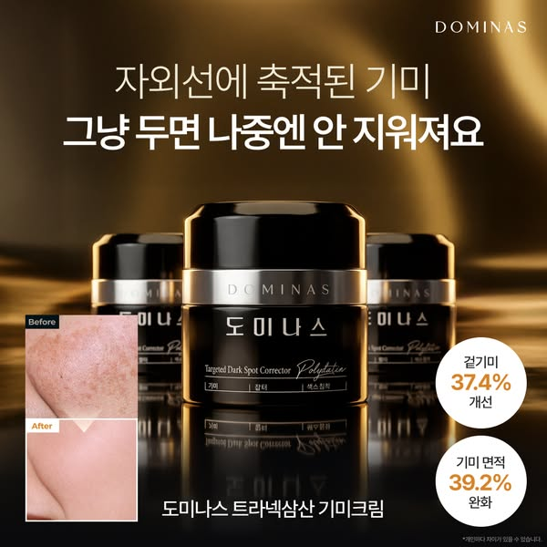
자외선에 축적된 기미 / 그냥 두면 나중에 안 지워져요 / 겉기미 37.4% 개선 / 기미 면적 39.2% 완화
원문·관련 설명 ↗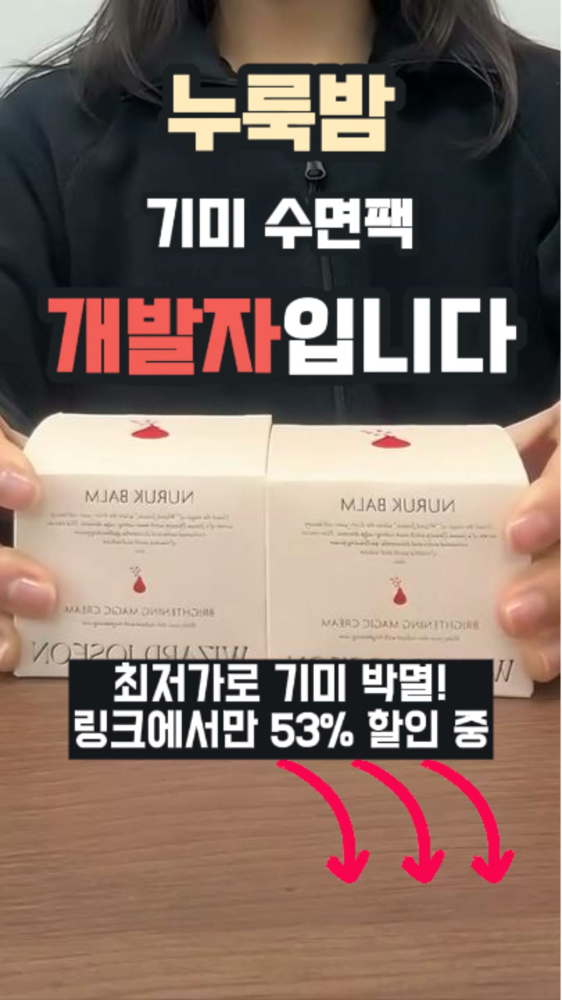
누룩밤 기미 수면팩 개발자입니다 / 기미 박멸 / 최저가 / 링크에서만 53% 할인중
원문·관련 설명 ↗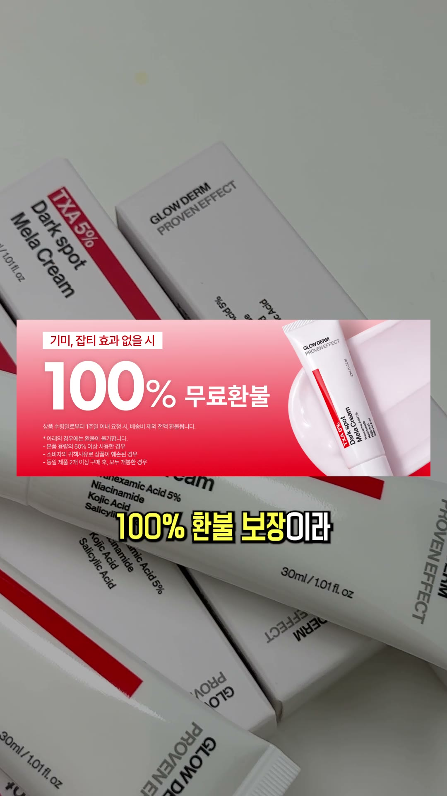
기미, 잡티 효과 없을 시 100% 무료환불
원문·관련 설명 ↗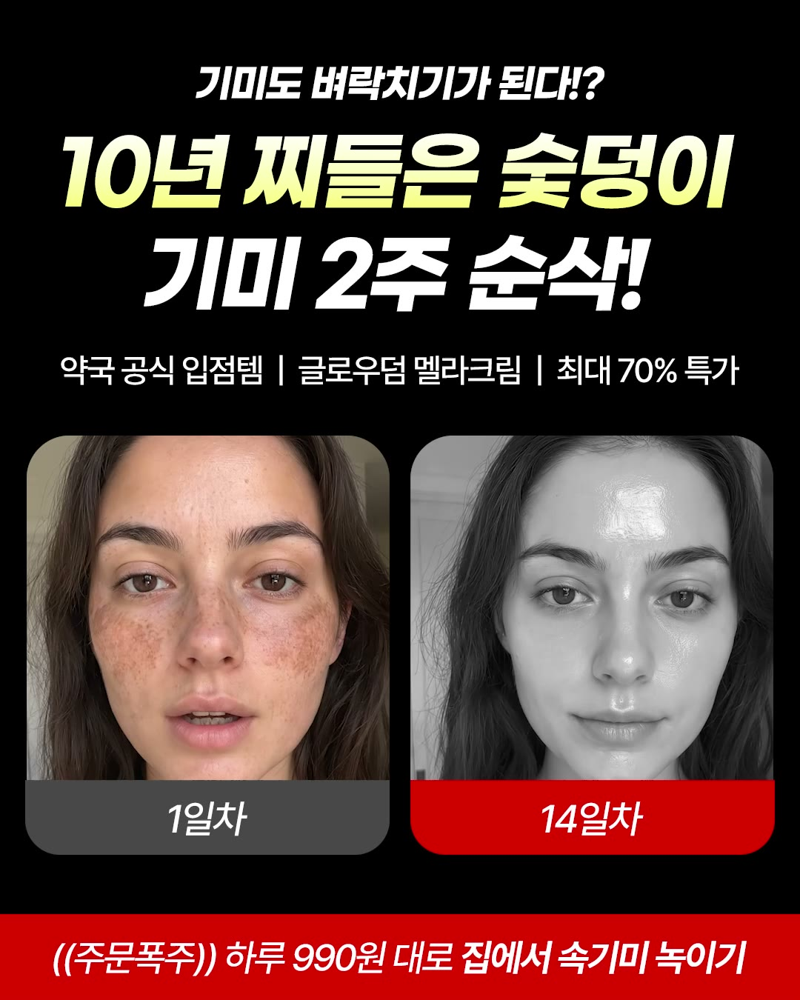
10년 찌들은 숯덩이 기미 2주 순삭! / 약국 공식 입점템 / 하루 990원 대로 집에서 속기미 녹이기
원문·관련 설명 ↗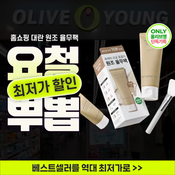
요철 뿌뽑
원문·관련 설명 ↗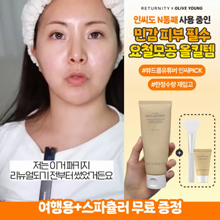
민감 피부 필수 요철모공 올킬템
원문·관련 설명 ↗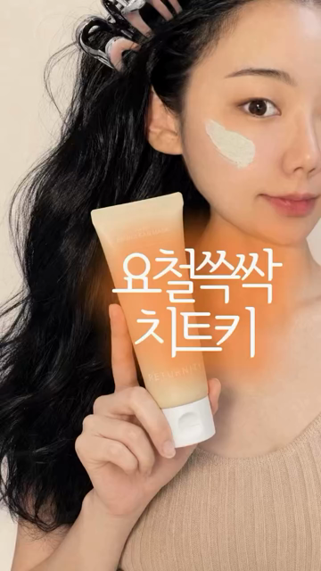
요철쓱싹 치트키
원문·관련 설명 ↗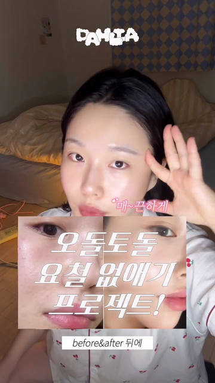
오돌도돌 요철 없애기 프로젝트!
원문·관련 설명 ↗분류는 이 작업의 제작 기준입니다. 이미지 한 장으로 전체 영상의 포맷을 확정하지 않습니다.
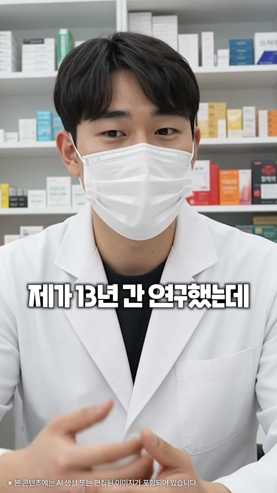
전문가 등장 → 원인 설명 → 시연 → 제품 안내
CCFM 판매종료 약사후킹 · 전체 전개 분석 있음
내 기미 고민 → 써본 과정 → 변화 → 추천
메디큐브 사례 · 시작 캡처만 확인
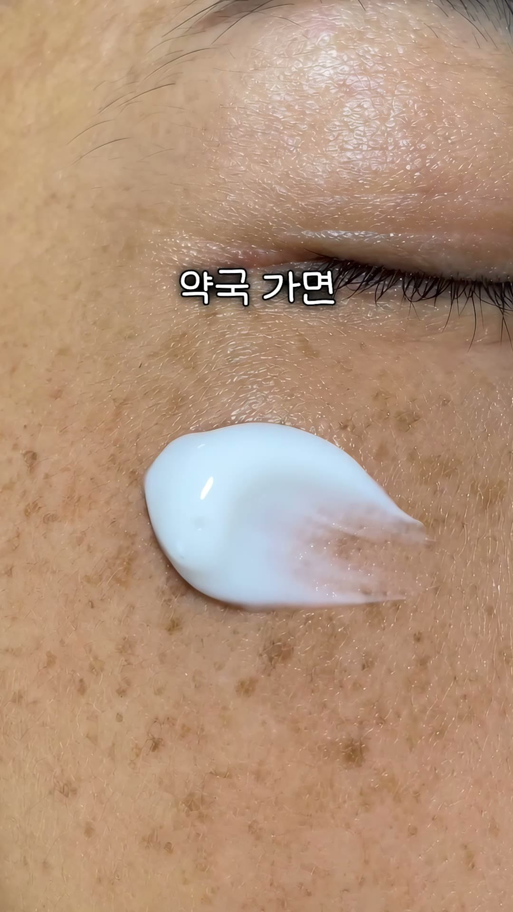
주변 사람이 먼저 알아봄 → 이유 → 시연 → 추천
CCFM 어머님 · 전체 전개 분석 있음
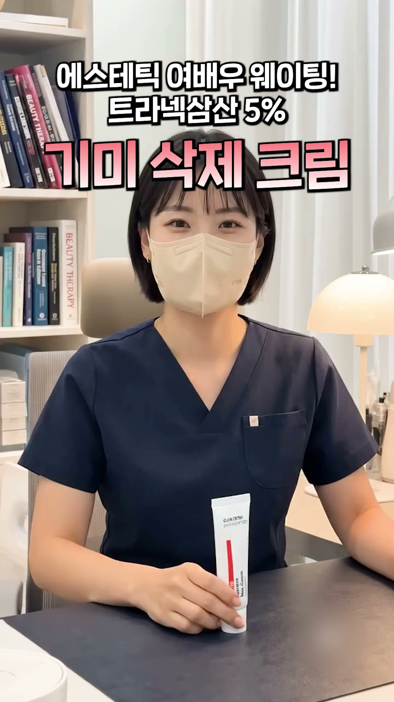
피부 접사 → 도포·닦기 → 비교 → 설명
CCFM 관리받는구도 · 전체 전개 분석 있음
레이저 비용·방법·결과와 크림을 비교
메라블 이미지 확인 · 전체 비교 영상은 구성안
개발 이유 → 제품 설명 → 사용 장면 → 추천
누룩밤 사례 · 개발자 소개 캡처 확인
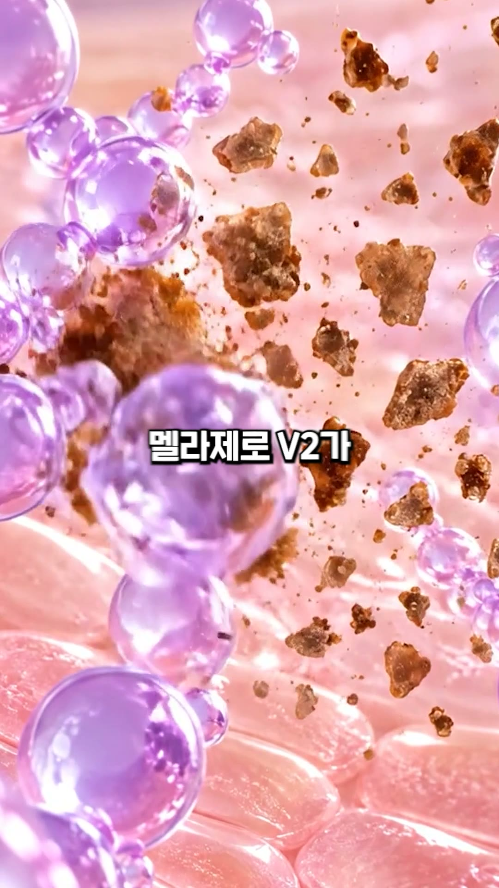
문제 → 피부 속 원리 → 제품 작용 → 시연
CCFM 파란인물 · 원본 영상 27초 제품 작용 CG
원본 영상의 장면 구성 분석 · 0초 문제 → 7초 피부 단면 → 27초 제품 작용 CG → 33초 얼굴 도포
비포애프터 · 절반만 닦기 · 같은 얼굴 비교
레이저 비용·통증·반복 방문 vs 홈케어
100% 환불 · 돈 돌려드림 · 무료체험
안 없어지면 고소하세요 · 전재산 보증
전문가 경력 · 개발자 · 연구 이야기
멜라닌 생성·배출 설명 · 피부 단면 CG
트라넥삼산 5% · 농도·함량
피부과 다니냐 · 시술했냐 · 달라졌다는 반응
40·50대 · 출산 후 · 등산·자외선 상황
1주·2주 · 날짜 카드 · 사용 기간
할인 · 1+1+1 · 판매 종료·마감
지우개 · 와이퍼 · 바르는 레이저
위 목록은 분류 도감입니다. 사용 확인·위닝 여부는 아래 실제 사례와 별도로 봅니다. 면봉은 비포애프터를 보여주는 구체적인 시연 도구입니다.
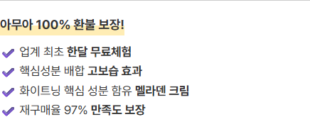
아무아 100% 환불 보장!
공식 판매 페이지 문구 · 영상 위치·집행 성과는 미확인
공식 페이지 ↗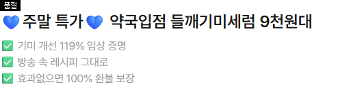
✅ 기미 개선 119% 임상 증명 ✅ 방송 속 레시피 그대로 ✅ 효과없으면 100% 환불 보장
공식 판매 페이지 문구 · 영상 위치·집행 성과는 미확인
공식 페이지 ↗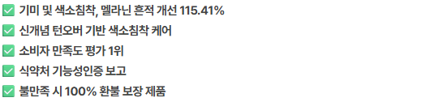
불만족 시 100% 환불 보장 제품
공식 판매 페이지 문구 · 영상 위치·집행 성과는 미확인
공식 페이지 ↗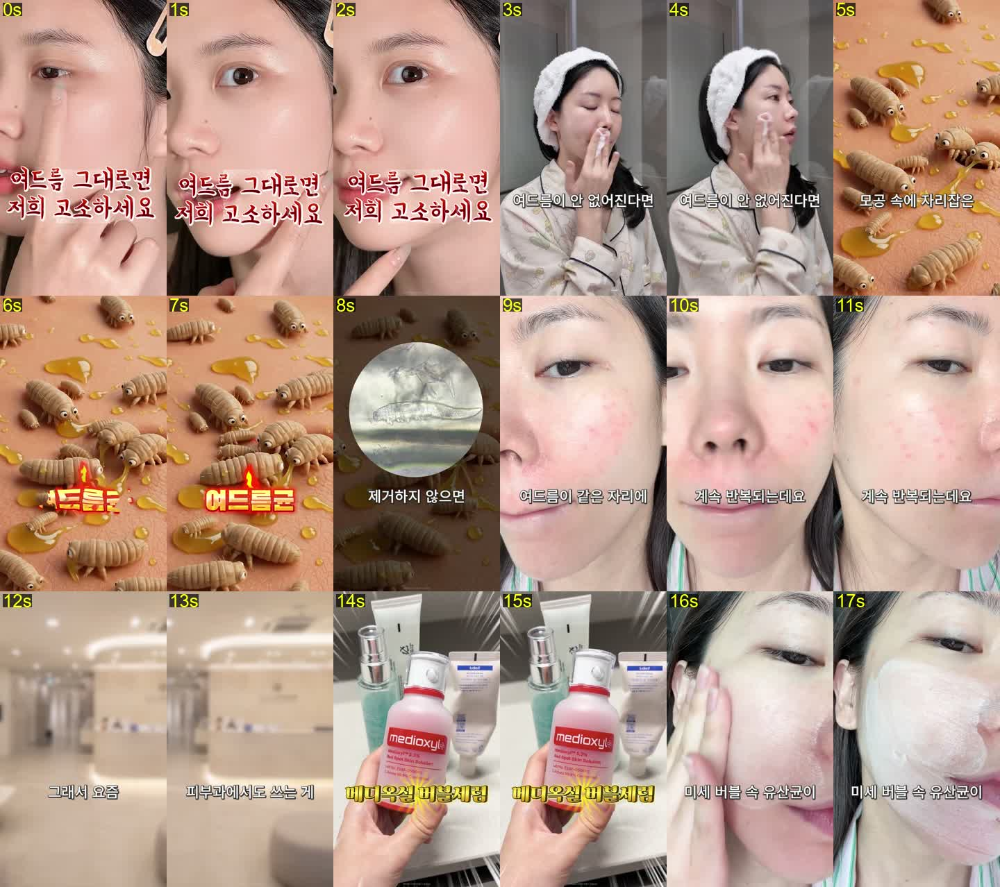
원본은 메디옥실 여드름 광고입니다. 기미 광고의 동일 문구 사례로 바꿔 적지 않았습니다.
0~2초에 큰 자막 · 3초부터 대사 자막으로 교체 · 우리 기미 제작안에 각색된 문구는 별도
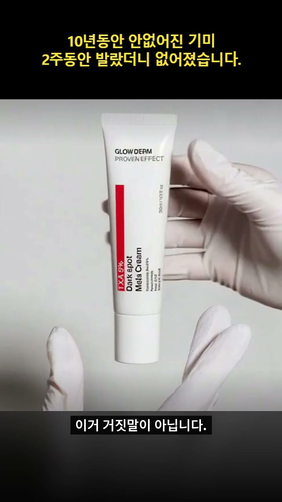
같은 상단 약속 문구를 유지하고 아래 대사만 바꿈
0~9초: 상단 결과 문구 + 가운데 전후 + 하단 빨간 가격 띠 유지
0~6초 상단 제목 유지 → 전후·시연으로 전환
실제 44초 환불 카드 · 전 구간 고정과 다름
0~2초 도발 문구 → 3초부터 설명 자막
확인 구간을 적었습니다. 가격·보증을 하단에 영상 끝까지 고정한 기미 사례는 별도 캡처 검증 전입니다.
기본형전문가 설명 + 강한 키워드 + 도포·면봉 + 같은 얼굴 전후
비교형전문가 설명 + 레이저 비교 + 도포·면봉 + 전후
보증형전문가 설명 + 도포·면봉 + 전후 + 마지막 보증 카드
자막 비교같은 영상에 상단 고정 문구 유무만 바꾸기
보증 문구의 위치·유지 시간은 별도 변수로 비교합니다. 여러 요소를 한 번에 바꾸지 않습니다.
기존 광고 원장 22,985행을 검색해 기미·색소침착 언급과 장면 설명이 있는 107건을 선별했습니다. 색소침착 인접 제품도 포함되며, 현재 집행 중인 전체 광고를 새로 전수 수집한 것은 아닙니다.
기존 10/12 타사 자료와 10/8 CCFM 장면·성과 자료, 공식 판매 페이지의 환불 문구를 대조했습니다.
원본 영상 요청이 실패한 5건과 영상 주소가 없는 3건은 추가 캡처를 확보하지 못했습니다. 확보 못 한 이미지를 다른 사례로 대체하지 않았습니다.
초반에 키워드와 비교 부위를 보여주고, 시연 중에도 전문가가 같은 화면에서 설명
첫 문장·상단 자막
같은 얼굴·구도 비교
비포애프터 안의 고정 시연
채택한 방향: 전문가 포맷은 큰 주제, 키워드·비포애프터·면봉 시연은 영상에 넣을 소구 요소 + 강한 B/A 컷 1개 고정(10/21)
CCFM 기존 광고 캡처 · 전문가가 얼굴을 보이며 직접 말하는 구성 참고
실제 광고에 쓰인 표현을 먼저 보고, 우리 영상에 넣을 키워드를 고릅니다.
원문: “[피부과 반값] 피코 레이저를 이제 집에서!” · “3일 기미 삭제 스킨부스터 크림”
우리 구성 키워드 하나로 전문가 첫 문장 → 도포·면봉 시연 → 같은 부위 전후
광고 원문 ↗우리 구성 강한 첫 문장 → 전문가 설명 → 도포·면봉 → 전후 비교
광고 원문 ↗ROSE의 전후 해설·시연 옆 설명과 메디큐브의 성분 고르는 법을 가져옵니다. 우리가 채택한 강한 키워드·비포애프터·면봉을 한 흐름으로 묶는 데 가장 맞는 조합입니다.
전문가 경력 → 판매 종료·보증 → 피부 접사 → 원리 설명
전후를 짚는 전문가 → 옆에서 설명하는 면봉 시연 → 성분 한 가지 → 구매 안내
우선순위는 실제 광고 연출과 우리 채택 요소의 연결성을 보고 정했습니다. 타사의 ROAS·전환율은 공개되지 않았습니다.
해외 색소·다크스팟 제품 5편 + 국내 PDRN 제품 1편. 같은 브랜드의 다른 영상은 별도 방식으로 비교했습니다.
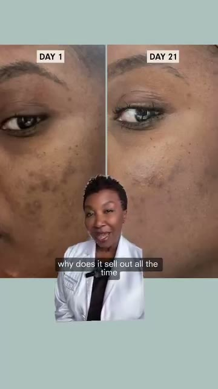
전개 상품 페이지 → 6초부터 사용 전후 → 성분과 제품 설명
전문가 역할 전후 사진 뒤로 빠지지 않고, 사진 옆에서 무엇이 달라졌는지 설명한다.
우리 적용 우리도 비교할 부위를 짚는 전문가를 남긴다. 단순 전후 사진보다 볼 곳이 분명해진다.
개시일 미확인 · 매출 성과 비공개
광고 수록 페이지 ↗전개 전문가가 선택 기준 제시 → 피부·도포·닦기 영상 뒤에서 해설
전문가 역할 시연 영상과 전문가가 한 화면에 함께 남는다.
우리 적용 면봉이 움직이는 동안에도 전문가를 작게 남겨 말과 시연을 연결한다.
개시일 미확인 · 매출 성과 비공개
광고 수록 페이지 ↗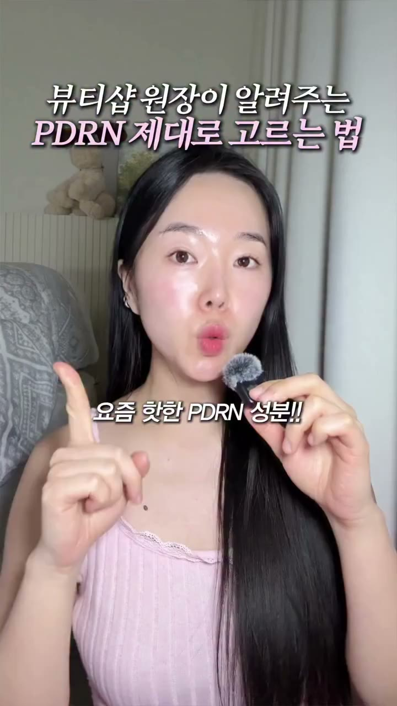
전개 이거 꼭 확인하세요 → 4초 순도 99% 표기 → 성분 비교 → 직접 사용
전문가 역할 뷰티숍 원장이 구매 기준을 먼저 알려주고 패키지 표기를 보여준다. 의사 사례가 아니다.
우리 적용 TXA 5% 등 우리 제품의 실제 표기 한 가지를 짚고, 면봉 시연으로 연결한다.
개시 2026-05-07 · 관찰 108일 · 종료 기록
제품 원문 ↗전개 얼굴을 보며 첫 주장 → 비싼 레이저보다 루틴 → 제품 단계
전문가 역할 짧은 셀프 촬영으로 비용에 대한 생각을 뒤집고 제품 루틴을 제안한다.
우리 적용 “레이저부터?”라는 타깃 질문을 받아 전문가가 답하고 시연으로 연결하는 별도 편.
개시일 미확인 · 매출 성과 비공개
광고 수록 페이지 ↗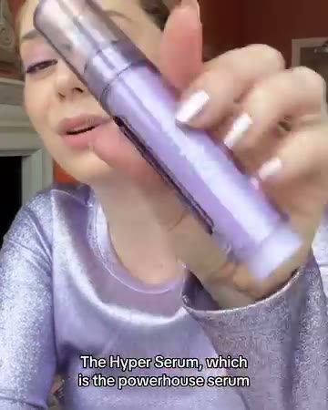
전개 자기소개 → 고르지 않은 피부톤 문제 → 제품을 만든 이유 → 장점 두 가지
전문가 역할 전문가 얼굴만 오래 비추는 대신 제품을 들고 손가락으로 항목을 나눈다.
우리 적용 우리 설명도 한 번에 한 포인트씩, 얼굴·제품·성분 표기를 함께 보여준다.
개시일 미확인 · 매출 성과 비공개
광고 수록 페이지 ↗전개 0초 제품 → 피부와 결과 메시지 → 가운 인물 → 제품군
전문가 역할 전문가로 연출한 가운 인물은 후반 확인 컷으로만 등장한다. 긴 설명형이 아니다.
우리 적용 전문가가 초반부터 설명하는 우리 방향에는 후순위. 제품 컷과 얼굴을 연결하는 방식만 참고.
개시일 미확인 · 매출 성과 비공개
광고 수록 페이지 ↗유세린의 별도 6초 루틴 영상은 소개 글에 전문가 등장이라고 되어 있었지만, 실제 영상에는 제품군만 나옵니다. 전문가 활용 사례에서 제외했습니다.
메디큐브 사례는 PDRN 겔패드·크림의 인접 제품 광고입니다. 기미크림 성과 사례로 바꾸지 않고 전문가의 설명 방식을 참고했습니다.
해외 광고는 원본 화면을 확인한 연출 사례입니다. 개시일·집행일수·ROAS를 확보하지 못했으므로 최신 국내 유행이나 고성과 광고라고 판정하지 않았습니다.
아래 사진은 참고 광고의 실제 화면입니다. 오른쪽 문구·화면 구성은 우리 제작안입니다. 전체 길이는 대사와 시연이 읽히는 속도로 정합니다.
화면 상단 “기미 삭제” + 전후 화면 + 전문가 얼굴을 같이 보여주기
대사·설명 “전후에서 어디가 달라졌는지, 여기부터 보세요.”
이유 · 경력 소개를 기다리지 않고 광고의 주제와 볼 부위를 바로 알게 한다.
화면 큰 화면은 같은 얼굴의 도포·면봉 시연, 작은 화면은 전문가
대사·설명 전문가가 면봉이 움직이는 부위를 짚으며 짧게 설명
이유 · CCFM의 시연 강점을 유지하면서 화자와 화면이 끊어지지 않게 한다.
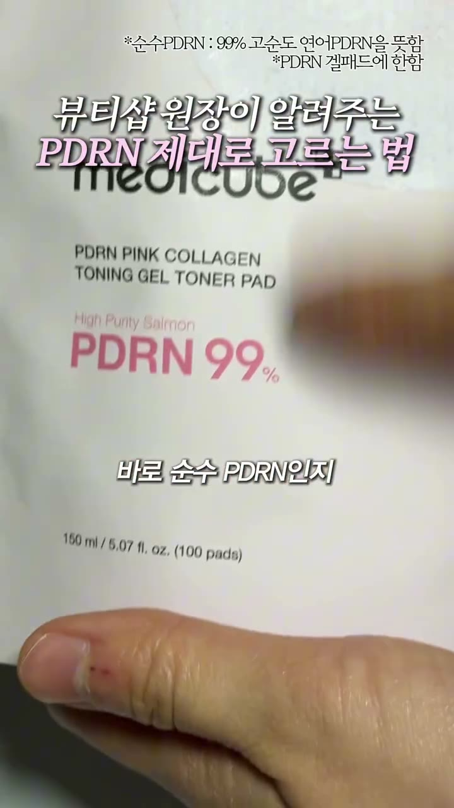
화면 제품의 실제 TXA 5% 표기를 확대하고 전문가가 한 가지 설명
대사·설명 성분명 나열 대신 이번 편의 핵심 한 문장
이유 · “전문가라 믿으세요”에서 “어떤 제품인지 보고 판단하세요”로 연결한다.

화면 같은 부위 비교를 되짚고 제품·현재 판매 조건 안내
대사·설명 면봉 시연 전후와 기간 사용 전후는 각각 표시
이유 · 무엇을 비교한 화면인지 알게 하고 마지막 구매 이유를 이어준다.
메디큐브처럼 제품 표기를 짚는 전문가 → TXA 5% → 면봉 시연 → 전후. 강한 결과 주장보다 선택 기준으로 설득하는 편.
Dr. Idriss처럼 타깃 질문을 바로 받는 전문가 → 비용·방법 비교 한 가지 → 크림 사용 장면 → 전후. 가격·시술 키워드를 별도 주제로 쓰는 편.
전문가·비포애프터·닦기 자체는 새 방식이 아닙니다. 면봉 시연은 사용자가 가져가기로 한 요소로 고정하고, 같은 우리 영상에 첫 문장만 다른 A/B를 만듭니다.
전문가가 설명 → 도포·닦기 → 원리 설명 → 제품 안내
닦기 장면은 면봉으로 고정 · 같은 얼굴·구도로 전후 연결
‘기미 크림’으로 시작 ↔ ‘기미 삭제’로 시작
잘된 요소를 버리지 않고, 첫 문장의 결과 키워드가 반응을 바꾸는지 확인하기 위해
‘30초면 더 잘된다’는 근거는 없습니다. 길이·장면 순서·첫 문장을 동시에 바꾸던 이전 안은 후속 후보로 내렸습니다.
CCFM 실제 도입 · 0~3초 구간
“제가 13년간 연구했는데 / 이걸로 안 없어지는 기미는 없었습니다”
우리 A · 제품명 중심 도입 시안
“기미 크림, 닦이는 것부터 보세요.”
우리 B · 결과 키워드 중심 도입 시안
“기미 삭제, 닦이는 것부터 보세요.”
CCFM은 전문가의 경력을 먼저 말합니다. 우리는 보여줄 시연과 첫 문장을 바로 연결합니다. A/B는 ‘크림 ↔ 삭제’만 바꾸고 전문가·화면·이후 몸통·총길이는 동일하게 맞춥니다. 초수는 녹음 후 확정합니다.
사진은 CCFM 판매종료 약사후킹 원본에서 추출했습니다. 아래 시간은 원본 위치이며 새 영상의 확정 초수가 아닙니다.
CCFM 원본
경력과 연구 기간으로 먼저 주목시킴
우리 적용
전문가 얼굴은 유지. 우리 A/B는 기미 크림 ↔ 기미 삭제로 시작.
이유 · 같은 우리 영상에서 결과 키워드 하나의 차이를 비교한다.
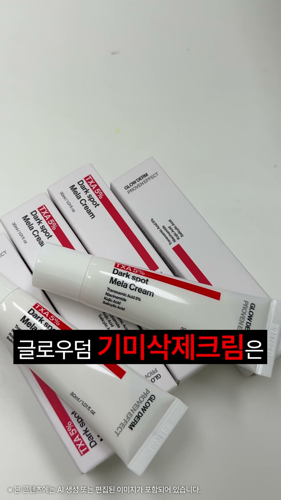
CCFM 원본
제품 컷 뒤 판매 종료 문구로 전환
우리 적용
두 편 모두 같은 제품 컷과 같은 안내를 사용.
이유 · 첫 문장 이외의 구매 자극을 같게 맞춘다.
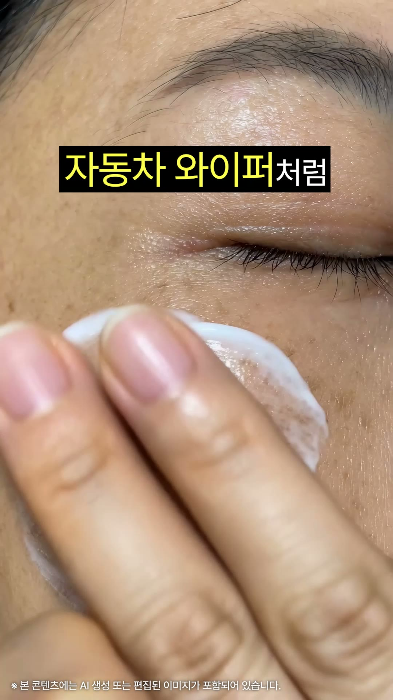
CCFM 원본
눈가 피부 접사에 손으로 바르는 장면
우리 적용
우리 공통 몸통에는 도포 → 면봉 한 줄 → 닦인 쪽 비교를 고정.
이유 · 사용자가 채택한 면봉 시연을 두 편 모두 보여준다.
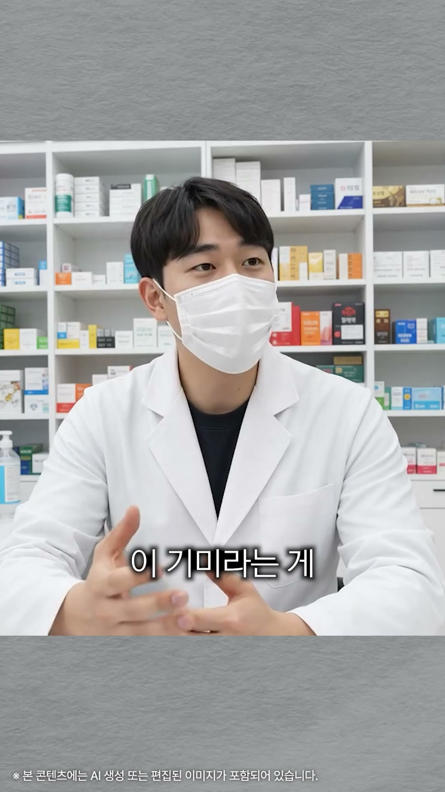
CCFM 원본
전문가 얼굴로 돌아와 피부 속 원인을 설명
우리 적용
두 편 모두 같은 화자·같은 설명을 사용.
이유 · 첫 문장과 설명하는 사람이 자연스럽게 이어지게 한다.
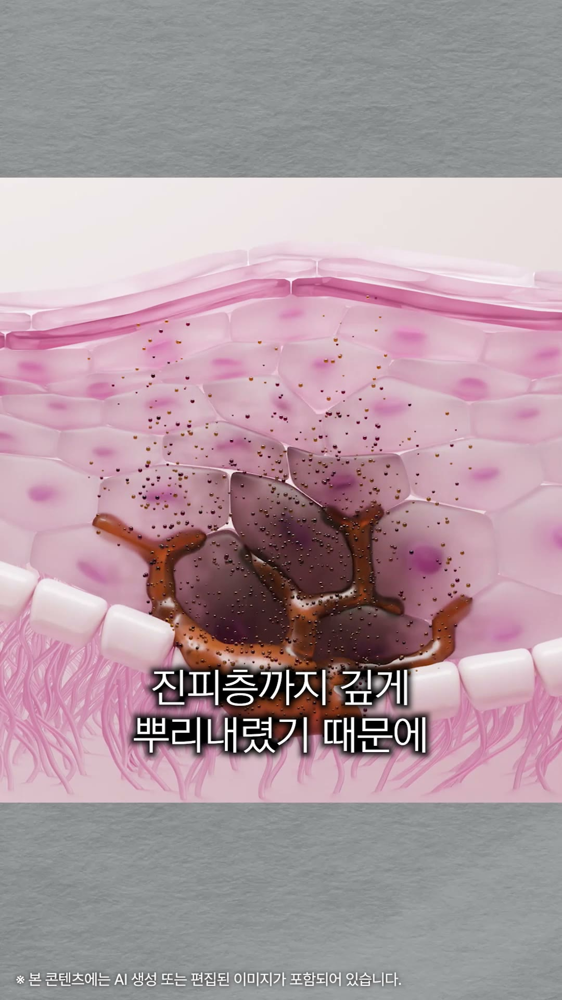
CCFM 원본
색소 뿌리를 피부 단면 CG로 표현
우리 적용
CG를 쓴다면 두 편에 동일하게 넣는다.
이유 · 설명 분량까지 바꾸면 첫 문장의 차이를 구분하기 어렵다.
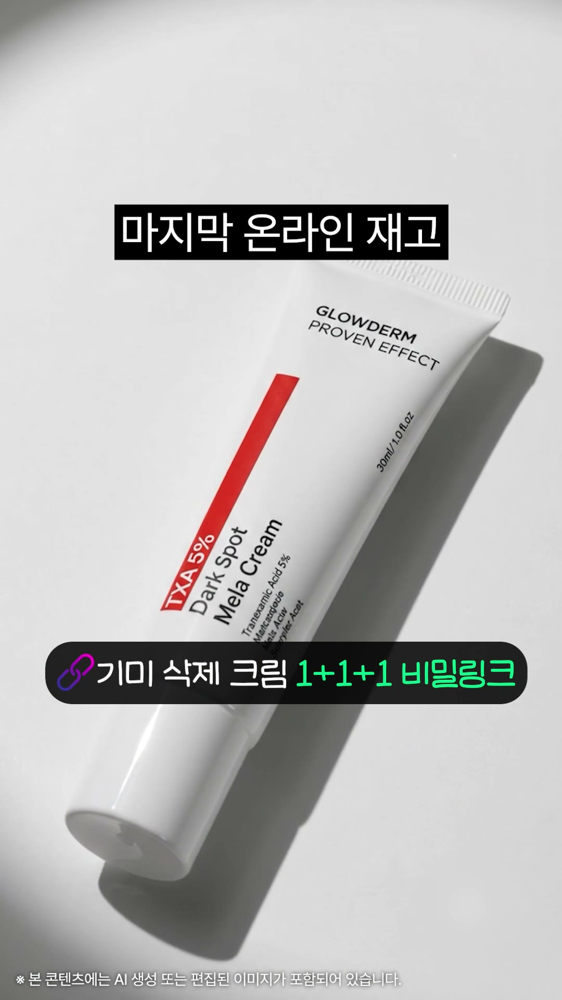
CCFM 원본
제품·1+1+1·링크로 끝냄
우리 적용
두 편 모두 같은 현재 판매 조건·같은 마무리.
이유 · 마지막 혜택 차이가 결과에 섞이지 않게 한다.


CCFM 어머님 시연 캡처 · 우리 A/B 모두 같은 면봉 시연과 같은 전후 비교를 넣습니다.
CCFM 약사후킹 원본은 약 46초입니다. 이전 안은 도포·닦기를 6~12초에 모으고, 원리 설명을 16~24초로 줄여 30초로 압축한 안이었습니다.
차이는 새로운 포맷이 아니라 시연의 위치·설명 길이입니다. 빨리 시연을 보여주면 도움이 될 수 있다는 가설이지만, 이 순서와 30초 길이가 더 낫다는 실측은 없습니다. 첫 문장 비교 후 별도 후보로 남깁니다.
질문·결과 키워드 하나로 시작 · 상단 자막도 같은 주제
얼굴·조명·구도 고정 · 닦을 부위를 보여주기
한 컷으로 과정을 연결 · 닦인 쪽과 안 닦인 쪽을 함께 남기기
직전 장면을 되짚거나 같은 구도 분할 · 면봉 시연 결과와 연결
성분·사용법 등 이번 편의 메시지 하나만 설명
실제 판매 조건과 링크 안내 · 전문가가 마무리
기미 부위 보여주기 → 크림 바르기 → 면봉으로 닦기 → 같은 얼굴에서 차이 비교
아래는 기존 CCFM 시연 캡처 · 새 영상에도 이 흐름을 유지하고 전문가 설명을 이어 붙입니다
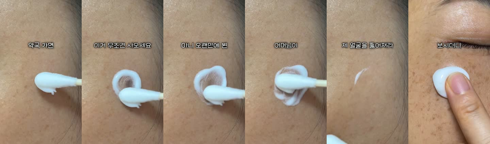
고정전문가 설명 + 비포애프터 + 면봉 시연
바꿀 것강한 키워드 또는 시연 위치 중 하나
첫 비교키워드만 다른 2편 · 시연 위치와 나머지 장면은 동일
화면에서 확인한 표현을 쉽게 다시 이름 붙였습니다. 시작일·일수는 2026.10.12 수집 기록 기준입니다.
메라블
기미 전후와 제품을 한 장에
우리 적용 전문가 설명 중 레이저 비교를 한 구간 넣기
시작 2025-10-14 · 집행 363일 · 이전부터 운영
광고 원문 ↗메라블
인물 + “여러분 저 찾았어요”
우리 적용 전문가 얼굴과 짧은 첫 문장을 맞추기
시작 2026-04-15 · 집행 180일 · 이전부터 운영
광고 원문 ↗광고주 미확인
부위 그림 + 큰 문제 문구
우리 적용 기미 부위를 확대하는 설명 컷으로 각색
시작 미확인 · 집행 미확인
광고 원문 ↗인접 제품 사례 · 기미 광고와 구분해서 형식만 참고
위자드조선 누룩밤
개발자입니다 + 제품
우리 적용 전문가 설명형의 화자·도입 방식 참고
시작 2026-06-30 · 집행 104일 · 이전부터 운영
광고 원문 ↗도미나스
기미 전후 + 제품 + 수치 카드
우리 적용 중간 비교 컷을 짧고 한눈에 보이게
시작 2026-06-30 · 집행 104일 · 이전부터 운영
광고 원문 ↗메디큐브
인물 정면 + 나이 상황
우리 적용 타깃의 기미 고민을 첫 문장으로
시작 2026-09-14 · 집행 28일 · 최근 30일 내 시작
광고 원문 ↗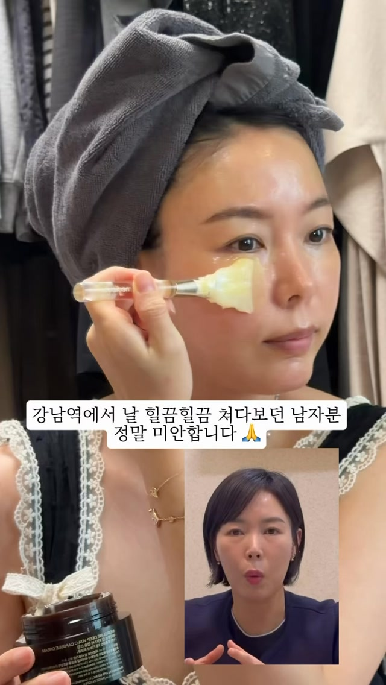
광고주 미확인
도포하는 얼굴 + 작은 반응 화면
우리 적용 전문가 설명 옆에 면봉 시연 배치
시작 미확인 · 집행 미확인
광고 원문 ↗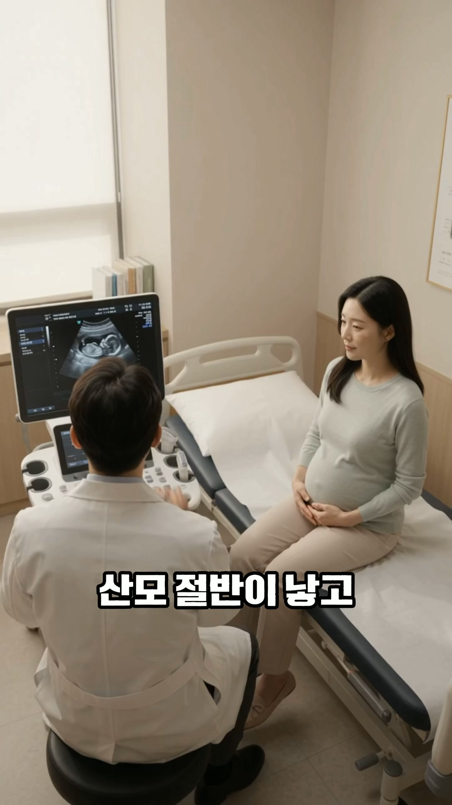
위자드조선 누룩밤
임신·진료 상황 컷
우리 적용 상황형 영상의 도입 참고
시작 2026-09-18 · 집행 24일 · 최근 30일 내 시작
광고 원문 ↗기존 목록 중 영상·이미지가 확보되지 않은 항목입니다. 메인 예시에서는 제외했습니다.
UV 카메라로 세안 전후 잔여물 보이기 · 캡처 미확보 / 시작일 미확인
특허 성분·제약사 업력 배지 · 캡처 미확보 / 시작일 미확인
미니어처 인부들이 피부 위에서 공사하듯 기미를 부숴 나름 · 캡처 미확보 / 시작일 미확인
3일·7일 단기 기간 타이포(7일 달력 OUT) · 캡처 미확보 / 시작일 미확인
"피부나이 -10살 / 10살 어려지기" 결과 카피 · 캡처 미확보 / 시작일 미확인
과거 위닝 편의 요소를 남겼습니다. 같은 계열의 실패 변형과 이후 성과 하락은 아래에서 별도로 확인합니다. 개별 요소만의 효과를 분리한 실험은 아닙니다.
어머님 계열 · 7/31~8/2 ROAS 239% · 구매 78건
크림 도포 → 면봉·솜 닦기 → 같은 부위 비교
어머님 계열 · 같은 위닝 영상의 서사
“피부과 다니냐” 같은 반응을 전문가 설명에 짧게 연결
관리받는구도 계열 · 8/28~30 ROAS 194% · 구매 21건
시연 뒤 CTA에 보증 문구 카드 배치
관리받는구도 계열 · 동일 기간 위닝 기록
전문가 설명과 장갑·도포·닦기 접사 연결
지우개 비유: 6/22 정리 · CTR 약 2.3%는 위닝 근거가 아님
직업군 이미지: 전환 0·높은 CPM으로 정리
야외활동: 영상별 구매 성과 미확인
클렌저 관리사: 소액·단기 성과, 정확한 파일 매핑 미확인
흑꿈치: 채택할 위닝 근거 미확인
어머님 ASC: 9월 ROAS 80%·60% 이후 OFF
관리받는구도: 9/17~18 ROAS 35%·83% 이후 OFF
어머님 변형: 9/21 ROAS 47%·구매 2건 이후 OFF
원칙: 0초는 기미가 있는 얼굴로 시작하고, 지워지는 과정은 1.6초 이후에 둡니다. 0~2초 안에 이미 깨끗해진 결과를 보여주면 볼 이유가 사라집니다(우리 01은 1.96초, 기존 제품 시작형 광고는 2.0초에 이미 깨끗한 얼굴. 확신도 낮음).
강한 B/A 컷 1개 필수 (10/21 확정) 모든 새 시나리오는 강한 비포애프터 컷을 최소 1개 고정으로 넣습니다. B/A는 두 갈래로 봅니다. 결과형(분할·날짜카드·부위접사·숫자결과)과 과정형(면봉·장갑·패드로 닦는 자리만 옅어지는 도포 소거)입니다. 우리 05의 면봉 소거가 잘 터진 것도 B/A를 과정형으로 임팩트 있게 보여준 사례라, 과정형을 우선하고 결과형은 중반 증거 컷으로 붙입니다.
실측 근거: ACIS 뷰티 영상 중 B/A가 주력 시각증거인 광고 1,512건 → 기미·미백 제품 329건 → 상위 24건 영상 실측 결과, B/A 비중이 0.5 이상인 것은 베러디션 패드 소거형 2건(ID 1046258 집행 65일·비중 1.0 / 729573 집행 115일·비중 0.62)뿐이었습니다. 비중은 그리드 육안 추정(확신도 중).
| 유형 | 어떻게 | 타사 | CCFM | 우리 |
|---|---|---|---|---|
| 도포 소거 | 면봉·장갑·솜이 지나간 줄만 옅어짐. 절반만 지워 비교선을 남김 | 메라블 골드필름 180일 · 베러디션 패드 소거 1046258(65일)·729573(115일) | 위닝 핵심 | 05 면봉(집행, 구매 4건) |
| 밀림 시연(클렌저) | 팩을 두고 문지르면 각질이 때처럼 밀려 나옴. 3초 이하 컷 여러 개 | 파파레서피 105일 | 다수 | 0 |
| UV 카메라(클렌저) | UV 필터 화면에서 세안 전 잔여물 → 세안 후 사라짐 | 히디프 203일 | 0 | 0 |
| CG 은유 | 미니어처 인부가 기미를 부숨, 지우개가 지움, 골드필름이 기미 핵을 끌어올림 | 메라블 82일·180일 | 지우개만 | 0 |
| 레이저 vs 크림 비교 | 레이저 빔이 멈추고 크림 바른 손가락이 대신 지나감, 또는 토닝 10회 vs 크림 1통 분할 | 킹스파워 109일(카피) | 분할 0 | 대본만 |
| 날짜 카드 | Day 1 → Day 7 손글씨, 7일 달력 OUT. 오프닝보다는 중반에 | 이지듀 56일·피캄 64일 | 2주만 | 2주만 |
| 부위 비포애프터 | 팔꿈치·겨드랑이·목 접사 전후(쥐젖·흑꿈치) | 피캄 71일·피부연구소 144일 | 흑꿈치 | 0 |
| 제3자 반응 | 비포애프터를 직접 안 보여주고 "피부과 다니냐"는 반응으로 증명 | 확인 안 됨 | 어머님 212% | 0 |
| 분할 화면 | 좌우·상하 정지 전후 | 다수 | 성과 낮음 | 사용 |
| 3D 단면 | 멜라닌이 부서지고 빠져나가는 단면 애니 | 다수 | 사용 | 사용 |
| 숫자 결과 카피 | "피부나이 -10살", "10살 어려지기"를 결과 화면 위에 | 메라블 58일 | 0 | 0 |
| 패드 소거 루프(초단편) | 4~5초 루프: 기미 볼 접사 + 장갑 도포 → 패드로 닦기 → 흔적 없음. 상단 손실 고정문구 + 우측 제품 패널 고정 | 베러디션 1046258(65일) | 0 | 시나리오_17 초안 |
CCFM에서 일자 라벨·카드뉴스·정방 분할·콜라주로 시작한 소재는 성과가 나빴거나 노출을 못 받았습니다. 날짜 카드와 분할은 중반 증거 컷으로 쓰고 오프닝에는 쓰지 않습니다.
| 키워드 묶음 | 멜라크림 비포애프터 | 필링팩클렌저 비포애프터 | 타사가 덜 쓴 키워드(ACIS 매칭 0~2건) |
|---|---|---|---|
| 1 피부 고민 | 도포 소거 + 지우개 은유, 결과에 "-10살" | 밀림 시연, 부위(쥐젖·흑꿈치) | 주근깨 지우기, 즉각 화이트닝, 기미가 때처럼 벗겨짐 |
| 2 고시 성분 | 3D 단면(성분이 스며드는 컷) | 앰플 포지셔닝 + 세안 접사 | 식약처 고시 미백성분(CCFM 미사용) |
| 3 시술 연상 | 레이저 vs 크림 한 컷 비교 | UV 카메라 전후 | 바르는 레이저(정확일치 0), 바르는 보톡스, 필러, 기미 치료, 코스메슈티컬 / 바르는 필링, 레이저 필링, MTS 없이 |
| 4 전문가·의료기관 | 관리 베드 시연(장갑 관리사) | 관리실 원장 + 밀림 시연 | 대학 공동연구, 원장님 추천, 피부과 전문의 개발 / 특허 필링 |
| 5 절대·즉시·비교 | 날짜 카드 7일 + 환불 카드 | 1회 시연 + 스크럽 비교 | 영구적, 완전 제거 / 각질 100%(CCFM 미사용) |
타사가 거의 안 쓴 키워드는 테스트 가치가 큽니다. 효과가 있으면 우리만 쓰는 무기가 되고, 없으면 왜 다들 안 쓰는지 확인하는 셈입니다.
올리는 건 맞지만, 후킹률이 높다고 잘 팔리는 건 아닙니다. CCFM이 후킹률을 보고한 소재는 120개 중 7건뿐입니다.
| 소재 · 클릭하면 영상 | 슬랙 보고(정점 구간) 초반 0~3초 후킹률 | 슬랙 보고 결과 | 광고관리자 누적(6/1~10/11) 후크 비율 | 누적 ROAS 매출 ÷ 광고비 |
|---|---|---|---|---|
| - | 정점 ROAS 212% | 44% | 156% | |
| 50%+ | ROAS 223%, 지금까지 생존 | 60% | 153% | |
| - | ROAS 138% | 54% | 141% | |
| 50%+ | 189~261% 후 다음 구간 123%로 정리 | 60% | 140% | |
| 40% | ROAS 117%, 구매 31 | 39% | 119% | |
| 19% | ROAS 129%, 구매 4 | 18.2% (계산값) | 89% | |
| 50%대 | 단기 ROAS 298% · 구매 1건 | 45% (노출 2,102) | 84% | |
| 30%대 | 구매 0, 정리 | - | - |
파란인물: 50%대는 단기 보고의 후킹률, 298%는 구매 1건이 발생한 단기 ROAS입니다. 누적 후킹률은 45%, 누적 ROAS는 84%(기존 표의 0.84)입니다. 같은 기간의 숫자가 아니며, 구매 1건으로 위닝을 확정하지 않습니다.
차이 원인 = 기간(정점 vs 누적)이 주원인입니다. 슬랙 일부는 어드민 매출 기준일 가능성이 있습니다(미확인).
| 기준선 | 1초 | 2초 | 3초 | 10초 |
|---|---|---|---|---|
| CCFM 위닝 4편 초별 유지율 평균(계산) | 85.5% | 62% | 54.5% | 27.2% |
우리 3초는 20~33%입니다. 패널 후크 비율은 01 33, 02 25, 03 29, 04 31, 05 20입니다.
우리 5편도 후크 비율 순서(01 > 04 > 03 > 02 > 05)와 구매(05 4건·03 1건(10/12 조회값))가 맞지 않습니다. 그래서 후킹률은 본문까지 오는 사람 수를 늘리는 1차 거름 지표로만 씁니다. CCFM "영상 유지율"은 메타 "지속 비율"과 다른 지표로 보여서 비교에서 뺐습니다(확신도 중).
| # | 레버 | 근거 | 확신도 |
|---|---|---|---|
| 1 | 0초는 사람 얼굴. 제품 단독 컷으로 열지 않음 | 기존 제품 시작형 광고는 0초 장갑+튜브에서 0→1초 −38%p(최대). 사람으로 연 01·02·04는 −12~−19%p. CCFM 50%+ 3편 모두 0초 얼굴 | 중 |
| 2 | 0~1.6초는 한 컷. 바꿀 땐 같은 인물로 당겨 찍기 | 우리 첫 컷 전환 0.37~1.47초 직후 −26~−42%p. CCFM은 1.57초(같은 인물)·컷 없음·1.67초 | 중 |
| 3 | 화면 인물이 직접 말하거나, 첫 명사가 화면과 일치 | 외국인극찬·전문가후킹은 화면 인물이 화자. 우리 01·03은 "공개수업" 대사에 기미 얼굴 | 중~낮 |
| 4 | 첫 문장은 1.6초 안에 끝나는 권위·놀람·손실 한 마디. 사연 도입 금지 | 우리 사연형은 핵심 단어가 2.7~3.4초에 나옴 | 중~낮 |
| 5 | 타깃이 예상 못 한 인물(젊은 남성·외국인·파란 마네킹) | CCFM 50%+ 3편 모두 해당, 우리 0편 | 낮~중 |
| 6 | 상단 헤드라인은 크게 2줄, 내레이션과 다른 정보 | 외국인극찬 "이민까지 생각하게 되는 / made in 한국 기미 크림" | 낮 |
| 7 | 전후를 앞에 보여줄지는 영상 주제에 맞춰 선택 | 전후를 해설하는 타사 사례가 있어 일괄 금지할 근거 부족. 비교 부위를 첫 문장과 연결. | 제작 가설 |
| 묶음 | 0~3초 화면 | 첫 문장 | 상단 고정문구 |
|---|---|---|---|
| 1 기미 삭제 | 서양 여성 AI 셀카, 광대 기미 위로 면봉 한 번, 그 줄만 옅어짐. 1.6초 같은 얼굴 펀치인 | "Wait… it's gone?" / 자막 "어? 지워졌는데?" | 외국인이 놀란 / 한국 기미 '삭제' 크림 |
| 1 기미 삭제 | 30대 남성 AI가 옆에 앉은 어머니(AI) 광대 기미를 가리킴. 1.6초 어머니 얼굴 펀치인 | "엄마 기미, 제가 2주 만에 지웠습니다" | 아들이 지운 / 엄마 기미 |
| 2 고시 성분 | 마스크 쓴 젊은 남성 AI 연구원이 튜브 뒷면 성분표를 카메라에 바짝 댐 | "성분표에 이 단어 없으면 기미크림 아닙니다" | 기미크림 고르는 법 / 성분표 딱 1줄 |
| 2 고시 성분 | 파란 3D 얼굴, 광대 위로 성분명 글자가 스며들며 기미가 옅어짐(한 컷) | "광대 기미, 바르는 성분은 하나만 보세요" | 기미 올라오는 자리에 / 고시성분 하나 |
| 3 시술 연상 | 파란 3D 얼굴, 레이저 빔이 멈추고 크림 바른 손가락이 대신 지나감 | "레이저 예약 전에, 이거 먼저 발라보세요" | 바르는 레이저 / 기미크림 |
| 3 시술 연상 | 서양 남성 AI가 피부과 대기실에서 시술 견적서를 흔듦 | "Why pay this for laser?" / 자막 "레이저에 몇백? 왜?" | 한국 엄마들이 / 레이저 대신 바르는 크림 |
| 4 전문가 | 검정 티·마스크 30대 남성 AI, 약국 진열대 앞. 1.57초 펀치인 | "약국에서 기미 물어보면 저는 이거 하나만 줍니다" | 약국에서 / 기미 물으면 주는 크림 |
| 4 전문가 | 60대 여성 원장풍 AI(흰 셔츠, 시술실), 팔짱 | "기미 레이저 매일 하는 제가, 집에선 이거 바릅니다" | 시술하는 사람이 / 집에서 바르는 기미크림 |
| 5 절대·즉시 | 젊은 남성 AI가 영수증을 들고 있음. 1.6초 영수증 펀치인 | "7일 발라보고 안 옅어지면 돈 돌려드립니다" | 7일 써보고 / 아니면 환불(실제 운영 조건으로) |
| 5 절대·즉시 | 서양 여성 AI 셀카, 볼에 "Day 1" 손글씨 → 1.6초 같은 얼굴 "Day 7?!" | "Seven days. Seriously?" / 자막 "7일 만에 이게 된다고?" | 7일 만에 옅어진 기미 / 한국 크림 |
제작쿠션 들뜸 전후 → 요철 접사 순으로 촬영 후보
가설고마쥬 밀림이 화면에 잡히는지 먼저 시험
근거리터니티 52건 중 40건 일괄 시작 · 승패 판정 불가
장면 관찰은 영상 12편 범위 · 전체 광고의 효과를 입증한 자료는 아님
리터니티 원본 · 우리 클렌저의 개선 결과나 제안 완성본이 아닙니다
카피 분류는 광고 52건 · 화면 관찰은 분석 영상 12편에 한정 · 축은 중복 집계
| 축 | 리터니티 (52건 중) | 리터니티 보여주는 방식 | 대행사 | 우리 | 판단 |
|---|---|---|---|---|---|
| A 화이트헤드 | 14건 · 카피 분류 | 말로만 함. '화이트헤드·좁쌀' 단어는 0건 | 좁쌀 0건 (블랙헤드는 많음) | 0건 | 빈칸. 단어 자체를 수집 카피에서 미확인 |
| B 화잘먹 | 12건 · 카피 분류 | 카피만 씀. 화장 장면 분석 12편에서 확인 못 함 | 확인 안 됨 | 0건 (제품 정본 소구 "화장 뜨는 이유? 각질입니다"만 있음) | 화장 전후 장면은 빈칸. 장기 근거는 히디프 195일 |
| C 오돌토돌 | 35건 · 카피 분류 | 손가락으로 볼 요철 짚기 초근접 → 결과 생얼 | 요철 많음 | 제작 중인 시나리오 대본만 | 포화 상태. 차별은 '없어지는' 순간의 증거 |
| D 각질 | 10건 · 카피 분류 | 스파츌라로 걷어내기 + 임상 82.5% 배지 | 각질 밀림·때밀이 매우 많음 | 0건 | 대행사 소재와 겹침. 팩 대신 고마쥬 밀림으로 차별 |
(0초 얼굴) 쿠션 바른 볼 초근접, 자막 "쿠션 또 떴네… 이거 쿠션 탓 아니에요"
장면·근거 보기 →(0초 얼굴) 손가락으로 볼 요철 짚기, 자막 "만지면 오돌토돌"
장면·근거 보기 →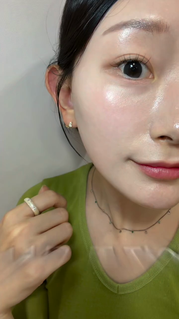
(0초 얼굴) 코옆·턱 화이트헤드 초근접, 자막 "짜지 마세요"
장면·근거 보기 →실제 화이트헤드 접사 촬영 필요 · 대응 레퍼런스 캡처 없음
샤워부스에서 스파츌라 없이 손으로 1분, 상단 고정 "샤워할 때 1분만"
장면·근거 보기 →목·팔꿈치로 범위 확장
장면·근거 보기 →| 순위 | 축 | 0~3초 훅 | 몸통 | 근거 |
|---|---|---|---|---|
| 1 | B+D | (0초 얼굴) 쿠션 바른 볼 초근접, 자막 "쿠션 또 떴네… 이거 쿠션 탓 아니에요" | 들뜬 볼 → 클렌저 롤링, 고마쥬가 밀려 나옴(3초 이하 컷 여러 개) → 세안 → 같은 쿠션 다시 발라 밀착 분할 | 리터니티 1468503505118210 카피 + 히디프 22966 구조(195일). 화장 전후 장면은 리터니티 0편 |
| 2 | C+D | (0초 얼굴) 손가락으로 볼 요철 짚기, 자막 "만지면 오돌토돌" | 롤링 → 손끝에 밀려 나온 고마쥬 초근접 → 세안 후 같은 손가락으로 같은 볼 쓸기 "잡히던 게 없어졌어요" | 리터니티 C축 기본형(1546833170002500, 2266472694203578) + 우리 고마쥬 증거 |
| 3 | A | (0초 얼굴) 코옆·턱 화이트헤드 초근접, 자막 "짜지 마세요" | 1분 팩 → 롤링 → 세안 → 같은 부위 초근접 | 단어 사용 0건(빈칸). 제품 정본 소구 "짜고 후회 말고 쓱-삭". 실제로 개선된 컷을 찍을 수 있을 때만 제작 |
| 4 | D | 샤워부스에서 스파츌라 없이 손으로 1분, 상단 고정 "샤워할 때 1분만" | 리터니티 '15분'과 대비해 1분 3in1 | 리터니티 1468503505118210·1323870246298133(상황+상단 고정 한 줄 포맷) |
| 5 | C | 목·팔꿈치로 범위 확장 | 2번 몸통 + 목·바디 도포 | 리터니티 1546833170002500(목 도포), 다른 광고 계정 1445110627680618(등) |
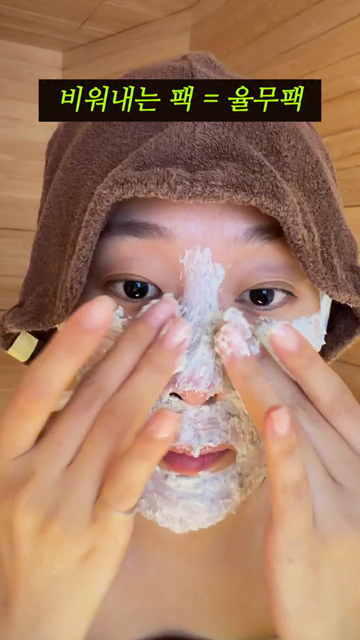
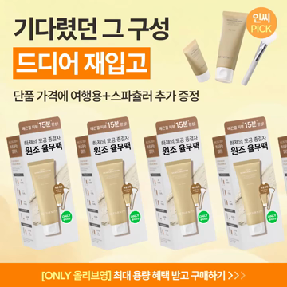
영상 12편 분석 · 집행일수 기준 2026.10.13 · 이미지: 0초 / 1.5초 / 3초
0~3초 훅 0s: 광나는 맨얼굴 정면 클로즈업(손을 쇄골에), 자막 없음 → 1~3s 중앙 큰 자막 '피부상태 뭐임?!!?!? 너무 좋잖아'. 나레이션 0.5s '피부 요철 때문에 고민이신 분들을 위한…'
전개 결과 얼굴(0~3s) → 손가락으로 볼 가리키며 '피부 요철 때문에 고민이신 분들을 위한!!' → 튜브 짜기 '누적 150만개 판매량으로 증명된 리터니티 율무팩' → 스파츌라로 얼굴 전체 펴바름 → '촉촉한거 보이시나요? 율무의 찬 성분으로 시원함' → 스파츌라로 걷어냄 + 목 도포 '요철 고민있는 목 근처에도' → 결과 생얼 '다들 생얼에도 피부 예쁘면 좋잖아' → 엄지척 '완전 강추~ 올영 달려가'
0~3초 훅 0s: 사우나(나무 벽)·수건 모자, 팩 바른 얼굴을 양손 손가락으로 문지르는 셀카 클로즈업 + 상단 자막 '비워내는 팩 = 율무팩'. 나레이션 '피부에 왜 그 율무팩을 바르면 득글득글한 게 없어지는데'
전개 팩 얼굴 문지르기(0~6s) → 튜브 들고 원리 설명(모공이 조여들며 피지·노폐물을 뱉어낸다) → '요철들이 없어지지?' → '율무팩이 바로 비워내는 팩'. 단일 컷 토크형, 전후비교 없음
0~3초 훅 0s: 좌측 수건 두른 여성이 어깨·등에 팩을 바르는 실사, 우측 고정 카드 '이 가격은 지금이 마지막 / 쉿! 올영특가 / 가드름·등드름 뿌리 뽑는 율무팩 / 올리브영 한정 기획 품절임박'
전개 좌측: 어깨→등→가슴 바르기 → 샤워 후 젖은 머리로 팔 쓸기(결과). 우측 카드는 전 구간 고정
0~3초 훅 0s부터 고정 이미지: 올리브영 매장 배경 + '홈쇼핑 대란 원조 율무팩' / 대형 타이포 '요철 뿌뽑' + 스티커 '최저가 할인' + 'ONLY 올리브영 단독기획' + 하단 바 '베스트셀러를 역대 최저가로 >>'
전개 15초 동안 거의 정지 화면(기획세트 박스·튜브·스파츌라 패키샷). 장면 전환 없음
0~3초 훅 0s부터 고정: '기다렸던 그 구성 / 드디어 재입고 / 단품 가격에 여행용+스파츌러 추가 증정' + 기획세트 박스 4개 나열 + '인씨 PICK' 뱃지, 하단 '[ONLY 올리브영] 최대 용량 혜택 받고 구매하기 >>>'
전개 박스 나열이 좌우로 흐르는 정도의 모션, 장면 전환 없음
0~3초 훅 0s: 좌측 헤어밴드 한 여성 크리에이터(인씨) 맨얼굴 토크 + 자막 '저는 이거 패키지 리뉴얼 되기 전부터 썼었거든요', 우측 고정 카드 '인씨도 N통째 사용 중인 / 민감 피부 필수 요철모공 올킬템 / #뷰드름유튜버 인씨PICK #한정수량 재입고', 하단 바 '여행용+스파츌러 무료 증정'
전개 토크 → 팩 바른 얼굴 클로즈업 '얘가 진짜 모공 구멍 청소랑 피부결 정돈이 너무 잘 돼요' → '그래서 여드름인들 사이에도 율무팩이 유명한 거잖아요' → 헹군 뒤 볼 만지며 '피부의 온도가 내려가 있어요' → 스파츌라 → '써보면 진짜 후회는 없으실 거예요'
0~3초 훅 0s: 아기를 안은 엄마가 튜브를 들고 정면 셀카, 상단 자막 '"시간 없다" 핑계대지 말기'. 나레이션 '아침에 일어나자마자 클렌징을 안 해요'
전개 아기 안고 튜브 짜기 → 맨손으로 코·볼에 바르기 → 얼굴 전체 도포 → '5분 10분 있는 거예요, 물 마시고 양치하고' → '어렵지 않다!' → 아기가 튜브 만짐 → '아침에 짧게 후다닥'. 전후비교 없음
0~3초 훅 0s: 샤워부스, 스파츌라에 회색 팩을 크게 덜어 카메라 앞으로 내미는 초근접 + 상단 자막 '샤워 할 때 그냥 올려두세요.' (2s부터 볼에 스파츌라로 바르기)
전개 스파츌라에 팩 덜기 → 볼·이마·코에 두껍게 얹기 → 얼굴 전체 도포 → 손가락으로 얼굴 가리키며 마무리. 나레이션 없음(배경음만 추정)
0~3초 훅 0s: 손에 든 튜브 패키샷 + 꽃 스티커 '율무 팩 / 누적 판매 130만 개' → 1s 튜브 입구에 팩을 짜올린 컷 + 자막 '요철이 고민이야?' → 2~3s 다시 튜브 패키샷
전개 패키샷 훅 → '오돌토돌한 요철' 볼 측면 초근접 → 스파츌라로 도톰하게 바르기 → 목·가슴까지 도포(눈 스티커 코믹) '15분만 기다리면 되는데' → 손등에 알갱이 텍스처 '고구마 라떼 안에 들어간' → 스파츌라로 걷어내기 → 매끈한 볼 '아기 피부가 되더라고요' → '이거 진짜 추천해요!'
0~3초 훅 0s: 맨얼굴 볼 초근접, 손가락으로 볼을 가리키며 자막 '피부결 드글드글하니까' → 2s 원형 강조 프레임 '화장하면 더 부각되고' → 3s 입가 측면 '피부결이 더 지저분해 보여서'. 나레이션 '피부결 드글드글하니까 화장은 더 부각되고 조명 받으면…'
전개 요철 볼 초근접(문제 제기) → '이런 덩어리들 싹 정리하고 싶은 분들' → 손등 텍스처 '율무가 그대로 느껴지죠?' → 판매량·홈쇼핑·올영 1위 → 모델 얼굴·목 도포 '크림 제형이라 마르지 않고' → 세안 '15분 뒤 미온수로 닦아보세요' → 매끈한 볼 초근접 '피지 노폐물까지 정리되니' + 임상 배지(묵은각질 82.5%) → 정면 모델 '피부 드글드글한 거 이제 고민하지 마시고' → '엄청난 할인 이벤트'
0~3초 훅 0s: 볼에 팩을 바른 여성이 튜브를 들고 정면 + 큰 자막 '요철쓱싹 치트키' → 1~3s 맨얼굴 셀카, 볼을 손가락으로 짚으며 '여름이니 피부결 모공 관리 너무 최악이다 싶더라구요'
전개 치트키 타이틀 → 문제 제기(볼 짚기) → 브랜드 소재 삽입 '결정돈 1위 율무는 리터니티(박지현 PICK)' → 임상 카드 '묵은 각질 개선 82.5% / 누적 판매 130만개·홈쇼핑 800억(자막 판독 불확실)·올영 1위' → 박지현 광고컷 '박지현 배우님 피부결 닮고 싶기도 하고' → 손등 텍스처 → 고민 4칸 표(요철·각질·모공·화장 들뜸) → 얼굴 도포 '요철이나 피부고민 많은 부위에 꼼꼼하게' → '세안 바로 직전 클로즈업' → '1주일에 한번은 꼭 써줄려구요'
0~3초 훅 0s: 잠옷 차림 여성 맨얼굴 토크(방 배경), 나레이션 '피부 매끈하게 요철 없애기 프로젝트' → 1~3s 중앙 타이틀 '오돌토돌 요철 없애기 프로젝트!' + 전후 분할 미리보기 썸네일 + 하단 'before&after 뒤에'
전개 프로젝트 타이틀(전후 예고) → 손바닥에 팩 짜기 '갈라지거나 굳는 그런 제형이 아니어서' → 바르기 → '자 15분이 지났고요' 걷어내기 → '율무 알갱이로 인한 도돌도돌 자극 싫어하시는 분들' → before/after 상하 분할 볼 초근접 '그런 것들이 사라진 걸 볼 수 있습니다' → 다리 요철도 '다리에 있는 요철도 사라져서' → '요철을 삭제 한번 같이 해보자고요'
보관된 실제 캡처 9건 · 이미지 클릭으로 확대 · 집행일수만으로 효율을 확정하지 않음
우리 적용 제품과 전후 비교를 한 화면에 배치
광고 원문 ↗우리 적용 얼굴과 짧은 첫 문장으로 시작
광고 원문 ↗우리 적용 생활 속 불편 → 해결을 그림 카드로
광고 원문 ↗인접 제품 사례 · 기미 광고와 구분해서 형식만 참고
우리 적용 제품 시연과 제3자 반응을 함께 배치
광고 원문 ↗우리 적용 실제 제품 정보로 전후 비교 카드 제작
광고 원문 ↗우리 적용 고민 부위를 확대해 보여주는 시작 장면
광고 원문 ↗인접 제품 사례 · 기미 광고와 구분해서 형식만 참고
우리 적용 상황을 먼저 보여주는 구도 참고
광고 원문 ↗우리 적용 대상의 상황을 첫 문장에 담기
광고 원문 ↗우리 적용 실제 개발 서사가 있을 때 소개형으로
광고 원문 ↗| # | 광고 ID | 페이지 | 시작 | 일수 | 형식 | 축 | 랜딩 |
|---|---|---|---|---|---|---|---|
| 1 | 1546833170002500 | hojin0307 | 09-06 | 37 | 영상 | C | 확인 안 됨 |
| 2 | 2150155609256128 | 리터니티 | 09-06 | 37 | 영상 | A,C | 확인 안 됨 |
| 3 | 1024879547221387 | 다른 광고 계정 | 09-10 | 33 | 이미지 | - | FB.COM |
| 4 | 1050665574526107 | 리터니티 returnity | 09-10 | 33 | 영상 | - | FB.COM |
| 5 | 1100151872444861 | 리터니티 returnity | 09-10 | 33 | 영상 | - | FB.COM |
| 6 | 1128288823191231 | 리터니티 returnity | 09-10 | 33 | 영상 | - | FB.COM |
| 7 | 1445110627680618 | 다른 광고 계정 | 09-10 | 33 | 영상 | A | FB.COM |
| 8 | 1481299957109610 | 리터니티 returnity | 09-10 | 33 | 이미지 | - | FB.COM |
| 9 | 1594017112213316 | 리터니티 returnity | 09-10 | 33 | 영상 | - | FB.COM |
| 10 | 1942451580062262 | 리터니티 returnity | 09-10 | 33 | 영상 | C | FB.COM |
| 11 | 2105465020050580 | 리터니티 returnity | 09-10 | 33 | 영상 | - | FB.COM |
| 12 | 2441672859656861 | 리터니티 returnity | 09-10 | 33 | 영상 | - | FB.COM |
| 13 | 2497377794088823 | 리터니티 returnity | 09-10 | 33 | 영상 | - | FB.COM |
| 14 | 1081845494819993 | 리터니티 returnity | 09-11 | 32 | 영상 | A,C | FB.COM |
| 15 | 1087454923668273 | 리터니티 returnity | 09-11 | 32 | 영상 | - | FB.COM |
| 16 | 1216846693984597 | 리터니티 returnity | 09-11 | 32 | 영상 | A,C | FB.COM |
| 17 | 1323870246298133 | 리터니티 | 09-11 | 32 | 영상 | A | 확인 안 됨 |
| 18 | 1452219053418051 | 리터니티 returnity | 09-11 | 32 | 영상 | A,C | FB.COM |
| 19 | 2216983059699868 | 리터니티 returnity | 09-11 | 32 | 영상 | A,C | FB.COM |
| 20 | 2857036944664026 | 리터니티 returnity | 09-11 | 32 | 영상 | - | FB.COM |
| 21 | 932655929920560 | 리터니티 returnity | 09-11 | 32 | 영상 | A,C | FB.COM |
| 22 | 1468503505118210 | 리터니티 | 09-13 | 30 | 영상 | B | 확인 안 됨 |
| 23 | 2130781567517437 | beaure_beaure | 09-13 | 30 | 영상 | B,C,D | OY.RUN |
| 24 | 1055591877112694 | 윤쨩뷰티데이 | 09-14 | 29 | 영상 | A,B,C,D | OY.RUN |
| 25 | 1056041357245227 | hh_xxle | 09-14 | 29 | 영상 | C | OY.RUN |
| 26 | 1110070878564303 | hojin0307 | 09-14 | 29 | 영상 | C | 확인 안 됨 |
| 27 | 1118001024512755 | ㅇㅇㅇㅇ | 09-14 | 29 | 영상 | C,D | OY.RUN |
| 28 | 1406795591413496 | thdguus | 09-14 | 29 | 영상 | B,C | OY.RUN |
| 29 | 1478301891024560 | ma._ong | 09-14 | 29 | 영상 | B,C,D | OY.RUN |
| 30 | 1545229997639069 | bae.s_lab.beauty | 09-14 | 29 | 영상 | A,C | OY.RUN |
| 31 | 1599686201633633 | 효진이야 | 09-14 | 29 | 영상 | C | OY.RUN |
| 32 | 1654138499444547 | yeon_0zu | 09-14 | 29 | 영상 | B,C,D | OY.RUN |
| 33 | 1752760059327108 | 유쁨 | 09-14 | 29 | 영상 | B,C,D | OY.RUN |
| 34 | 1780744083260560 | dalcom_cat | 09-14 | 29 | 영상 | C | OY.RUN |
| 35 | 1867333747578472 | dailylife00 | 09-14 | 29 | 영상 | B,C | OY.RUN |
| 36 | 2156908575263467 | my_9_me2 | 09-14 | 29 | 영상 | A,C | OY.RUN |
| 37 | 2221752358557696 | 리터니티 | 09-14 | 29 | 영상 | - | 확인 안 됨 |
| 38 | 2266472694203578 | 까탈로운로 | 09-14 | 29 | 영상 | B,C,D | OY.RUN |
| 39 | 2276677909820622 | __willow.eun | 09-14 | 29 | 영상 | C,D | OY.RUN |
| 40 | 2652129381857103 | seeeul.show | 09-14 | 29 | 영상 | - | OY.RUN |
| 41 | 873953185681839 | 달리아 ᎠᎪᎻᏞᏆᎪ | 09-14 | 29 | 영상 | B,C,D | OY.RUN |
| 42 | 984824067988288 | Teyion 터이 패션뷰티로그 | 09-14 | 29 | 영상 | B,C,D | OY.RUN |
| 43 | 1073288032285974 | 리터니티 | 09-22 | 21 | 영상 | C | BRAND.NAVER.COM |
| 44 | 1118345567428493 | 리터니티 returnity | 09-30 | 13 | 영상 | A,C | FB.COM |
| 45 | 1402798455337079 | 리터니티 returnity | 09-30 | 13 | 영상 | C | FB.COM |
| 46 | 1413728346772915 | 리터니티 returnity | 09-30 | 13 | 영상 | C | FB.COM |
| 47 | 2026757631314680 | 리터니티 returnity | 09-30 | 13 | 이미지 | C | FB.COM |
| 48 | 2181588326572077 | 리터니티 returnity | 09-30 | 13 | 영상 | C | FB.COM |
| 49 | 972725948447461 | 리터니티 returnity | 09-30 | 13 | 영상 | A,C | FB.COM |
| 50 | 1979551236066520 | 리터니티 returnity | 10-01 | 12 | 영상 | B,C | FB.COM |
| 51 | 1717440593075748 | 리터니티 returnity | 10-06 | 7 | 영상 | - | FB.COM |
| 52 | 3737072583098076 | luz.kk | 10-07 | 6 | 영상 | A,C | 확인 안 됨 |
research/기미키워드_테스트계획_20261012/(wf_result.json, matrix.md, plan.md, throughput.md, hook_rate_analysis.md)05의 실제 상단 고정 문구는 "10년동안 안없어진 기미 / 2주동안 발랐더니 없어졌습니다."(작은 글씨)이고, "이거 거짓말이 아닙니다"는 하단 자막·내레이션입니다(초판 정정). 1.33초 이후는 그대로 두고 앞부분만 바꿉니다.
| 편 | 바꾸는 것 하나 | 0~1.33초 | 검증 레버 |
|---|---|---|---|
| 제품 시작형 광고-H1 얼굴 시작 | 0초 주체: 제품 → 타깃 얼굴 | 1.33초 컷의 기미 옆얼굴을 0초부터 한 컷으로. 제품 컷 삭제 | 1·2 |
| 제품 시작형 광고-H2 의외 화자 | 0초 주체: 제품 → 예상 밖 인물 | 검정 티 젊은 남성 AI가 "이거 거짓말이 아닙니다"를 직접 말함 | 5·3 (인물·화자·대사가 함께 바뀌므로 단일 변수 효과 판정 불가) |
| 제품 시작형 광고-H3 첫 문장 | 첫 문장만 | 화면 원본 그대로, 내레이션을 "기미 지우는 크림, 거짓말 아닙니다"로 | 4 |
| 제품 시작형 광고-문구제거 문구 제거 | 상단 고정 문구만 | 원본에서 상단 띠만 삭제 | "고정 문구가 팔았다" 가설 |